Foundations of AI · Module 1 · Searching
This report documents the construction of an interactive, browser-based explanation of depth-first search, from the moment a set of lecture notes was handed to an AI assistant through to a deployed website. It is written as a changelog rather than a code dump: what was asked for, what the AI produced, what was wrong with it, and what was changed as a result.
The assignment had three parts. Choose one algorithm from the Module 1 lecture notes. Build an interactive website that teaches it, using an AI assistant to generate the code, and host it live. Then write a report documenting the development as a version history, with screenshots at every stage, showing the reasoning behind each change.
The stated evaluation focus was explicit, and it shaped how this project was run: the point is not whether an AI can write a working search algorithm in one shot. It plainly can. The point is the thought process applied to refining that first output into something better. This report is therefore weighted towards the disagreements, the things that were wrong, and the reasons for each correction, rather than towards the final listing.
Depth-first search, covered in Lectures 3 and 4 of the course notes, with its consequences traced through Lecture 5 (breadth-first search), Lecture 6 (uniform cost) and Lecture 7 (iterative deepening).
| Deliverable | Description |
|---|---|
| Live website | Cave Diver, a four-mode interactive explanation of DFS, hosted on GitHub Pages: https://akshath-pg.github.io/cave-diver-dfs/ |
| Source repository | https://github.com/Akshath-PG/cave-diver-dfs, with one tagged commit per version |
| This report | Version history, reasoning, screenshots and source |
The site has four modes. Dive puts the student in the cave as the diver and refuses moves that depth-first search would not make, explaining each refusal. Playground exposes the cave itself as a set of live controls so the properties of the algorithm can be tested rather than taken on trust. Race runs DFS against breadth-first search or iterative deepening over an identical cave. Learn is the written explanation, with a worked trace generated by the same code the game runs.
Section 5 is the core: one subsection per version, each containing the instruction given, the reasoning, the code that resulted and the screenshots of that version running. Three kinds of callout appear throughout:
All code excerpts are extracted automatically from the git repository at the tag being discussed, so the code printed here is literally the code that was running when the adjacent screenshot was taken.
The starting point was the course lecture notes, a 95-page PDF covering the whole of Module 1. The first instruction was to read it and propose ideas.
Instruction 1 — the opening brief
Go through this document. This is lecture notes provided by a professor, and we will be making from this. We will be choosing one algorithm. I have chosen DFS for this. And for this we will be making an interactive as well as engaging and explanatory game, which will be hosted on the web, GitHub or any other platform which allows hosting for free. And a report on how we are building it, how we are using Claude or any AI, and the changes and the versions, with screenshots and everything. First, let us decide on the game or interactive game and explanatory portions. For DFS, from these lecture notes, give me some ideas.
Getting at the notes
The PDF could not be read directly: the tool for rendering PDF pages was not installed on the machine. Rather than guess at the contents, a Python library was installed into a temporary folder and the text extracted, then the three embedded diagrams on the DFS pages were pulled out and read as images. This mattered more than it sounds. One of those images was the professor’s own twelve-step trace table, and it became the correctness specification for the whole project.
The notes were then searched rather than read end to end, which is an honest limitation worth recording: the DFS material on pages 12 to 17 was read closely, along with the BFS, iterative-deepening and backtracking sections that connect to it, but the other seventy-odd pages were only keyword-scanned.
DFS was specified in the brief, but it happens to be an unusually good fit for a game. Three reasons emerged from the notes themselves:
Six concepts were proposed. They are recorded here because the one that was eventually built came from rejecting most of them.
| Concept | Mechanic | Why it was not chosen |
|---|---|---|
| Robot on a cable | A warehouse robot trails a cable that winds in as it backtracks | Closest to the notes’ own robot, and was the initial recommendation |
| Stack Attack | Arcade game: press Push or Pop against a timer | Drills the steps but explains almost nothing about why |
| Thread Labyrinth | Explorer with thread and chalk in a cave | Good atmosphere, but moves away from the notes’ robot framing |
| Timetable Rescue | Schedule classes, hit clashes, backtrack | Uses the notes’ own CSP example, but that is about constraint propagation rather than pure DFS |
| Lost File Hunt | Search a folder tree for a file | Instantly relatable, but the least engaging to play |
| Robot Duel | DFS and BFS race across one map | Excellent for contrast, but works better as one level than a whole game |
The proposed robot concept was rejected in favour of a better one, supplied in the second instruction.
Instruction 2 — the cave diver, and the playground
Oh, I was thinking it is something like a cave diver. The person goes down, puts his ropes and goes down until he reaches a dead end, and again comes up and again puts his ropes down and goes. Probably will be something like that.
If you see, there will be a neural network playground by TensorFlow on the internet. It has some changes also, right? So similarly, we can also add some changes in the website where we give some conditions and how does he react, players can see. Or even the person can also be the player who goes down the cave and who puts down the rope and goes down the cave and sees, something like that. So what do you think about it?
Why this concept beat the proposed one
This instruction improved the project in two distinct ways, and it is worth separating them because only one was about theme.
The first was the metaphor. A cave diver with a guide line is better than a robot with a cable because it is literally true: cave divers really do lay guide lines and place direction markers, and they really do follow the line back out. The word depth stops being a metaphor and becomes the direction the diver is travelling.
The second, and more valuable, was the TensorFlow Playground reference. That reframed the project from a demonstration into an instrument. A demonstration shows a student that DFS is not complete. An instrument lets them switch completeness off and watch it break. Every claim in the notes could become a control, and the student could falsify it themselves. The entire Playground mode, which is the largest part of the site, exists because of that one sentence.
A theme that only renames things teaches nothing. The design constraint adopted was that every visible object on screen had to correspond to a real component of the algorithm, so that a student reasoning about the cave would automatically be reasoning about the search.
| In the cave | In the algorithm | Source in the notes |
|---|---|---|
| Chamber | State | Lecture 2, state space |
| Passage | Action | Lecture 2, actions |
| Rope laid behind the diver | The stack, holding the current path | Lecture 3, ingredient 3 |
| Winding the rope back in | Pop, backtrack | Lecture 3, the algorithm |
| Marker left in a chamber | Visited set | Lecture 3, ingredient 2 |
| Dead end | No unvisited neighbour | Lecture 3, the algorithm |
| Treasure | Goal state | Lecture 2, goal |
| Chambers entered | Time, O(bm) | Lecture 4, complexity |
| Rope in use | Space, O(m) | Lecture 4, complexity |
| Endless passage | Infinite branch, defeats completeness | Lecture 4 |
| Crawl-way looping back | Edge to an already-visited state | Lecture 3 |
One consequence of this rule is that breadth-first search could not be drawn as a diver at all. A single diver cannot be in several chambers at once, and pretending otherwise would have hidden exactly the thing BFS is expensive for. It is drawn instead as a team, each member holding a rope, so that the frontier is visibly many ropes rather than one. That is the memory cost, made physical.
Instruction 3 — build it
Yes, I like it. We will add both: Dive, where you are the diver, and the playground too. And everything else in the playground can be added. Let us build all that and the versions and everything in it.
Also, while doing this and posting it on my GitHub as a website, or even Vercel — do not add yourself as collaborator. It should be a standalone project. Do not add yourself or Claude as the collaborator.
Simultaneously I want a well-polished report. It should be step by step, from the initial prompt where I gave you my lecture notes PDF and our discussions, to the very last prompt, and the changes you are doing, your thought process and how you are thinking. Whatever changes, the code changes, and why we are doing it, all must be explained, with the code present and screenshots of the website while building it, put together as one PDF file.
Two constraints from that instruction governed the work. The first was authorship: every commit in the repository is authored solely by the student, with no co-author trailer and no collaborator added to the GitHub project. This was verified after the first commit and held for all six. The second was that the report had to be produced alongside the build rather than reconstructed afterwards, which is the reason the screenshot system described in Section 4.4 was built before any of the game was.
This section states the algorithm the site teaches, in the form the course notes present it. Everything built in Section 5 is an attempt to make one of these paragraphs visible.
An intelligent agent with a goal must get from where it is to where it wants to be. The notes model this as a state space: a set of states the agent can occupy, and actions that move it between them. A solution is a sequence of actions leading from the initial state to a goal state.
The difficulty is not usually that no solution exists. It is that there are too many candidate solutions. The notes give the example of a robot at a junction choosing left, right or straight, twenty times over: 320, roughly 3.4 billion possible action sequences. An agent with no knowledge of which direction is better cannot do anything clever about this. It can only be systematic. A search strategy is precisely a rule for deciding which state to look at next.
Depth-first search answers the question with the most committed rule available: whenever I have a choice, I will completely explore one possibility before trying another.
The notes derive a crucial observation from this. The agent does not need to remember the entire world. Once a branch is completely finished, those states no longer matter and can be forgotten. The only thing that must be remembered is the set of unfinished decisions — and the natural structure for storing unfinished decisions so that the most recent is handled first is a stack.
| Ingredient | Purpose |
|---|---|
| The state space | What states exist and which actions connect them |
| The visited set | What has already been completely discovered |
| The stack | Unfinished decisions, most recent first |
The visited set deserves emphasis, because it is easy to mistake for an efficiency measure. It is not. Without it the algorithm cannot tell a chamber it has already searched from a new one, so after backtracking it will immediately re-enter the branch it just left, forever. This is demonstrable on the site and is covered in Section 6.3.
As stated in the lecture notes
Visit current state.
Mark it visited.
Push it onto the stack.
If an unvisited neighbouring state exists, go there.
Otherwise pop.
Return.
Repeat.One detail of this formulation matters enormously and is often lost in other presentations. The stack holds only the current path. Many textbook implementations push every neighbour of the current node onto the stack at once, which makes the stack a frontier and raises its worst-case size to O(b×m). The version in the notes keeps it at O(m). The implementation built here follows the notes, and Section 7.1 shows the two producing identical traces.
Over the state space A → {B, C}, B → {D, E}, D → {F}, with C, E and F leading nowhere, the algorithm produces exactly twelve steps. The diver goes A, B, D, F, finds F a dead end, winds back to D, then to B, takes E, winds back through B to A, takes C, and finally pops A as the search terminates.
The notable feature is the shape of the stack over time: it reaches a maximum of four entries while the search visits all six states. On this tiny graph the gap is unimpressive. Section 3.7 shows what happens to that gap as the space grows.
| Criterion | DFS | Why |
|---|---|---|
| Complete? | No | Assuming unbounded depth, it can commit to an infinite branch and never return, even when a goal sits one step away down another passage. |
| Optimal? | No | With one charging station three moves away and another twenty, DFS may reach the twenty-move station first and stop. |
| Time | O(bm) | In the worst case it enters nearly every state. Changing the order of exploration does not reduce how many states exist. |
| Space | O(m) | At any instant it remembers only the current path. |
The notes make a precise point about the time bound that is worth repeating, because it corrects a common misreading. DFS is not expensive because it goes deep. At any instant it is following just one path. It is expensive because, across the whole execution, it may have to explore almost every possible sequence of decisions.
With branching factor b and maximum depth m, the number of states grows as bm while the rope grows as m. The notes use b = 4 and m = 20: the agent remembers twenty states while potentially exploring over a trillion. The site reproduces this figure exactly in its complexity calculator.
| b | m | States, roughly bm | Rope needed |
|---|---|---|---|
| 2 | 10 | 1,024 | 10 |
| 3 | 15 | 14.3 million | 15 |
| 4 | 20 | 1.1 trillion | 20 |
| 5 | 25 | 298 quadrillion | 25 |
The notes frame these as different policies for the same skeleton rather than as competing algorithms: DFS says stack, BFS says queue, uniform cost search says priority queue ordered by path cost, and A* says priority queue ordered by cost plus heuristic.
| DFS | BFS | Iterative deepening | |
|---|---|---|---|
| Memory | O(m) | O(bm) | O(m) |
| Complete | No | Yes | Yes |
| Optimal for equal costs | No | Yes | Yes |
| Structure | Stack | Queue | Stack, restarted |
Iterative deepening is the resolution the notes build towards: it repeats the shallow work, but the shallow levels contain very few nodes. Almost every node in an exponential tree lives in its deepest level, and that level is generated only once. The cost of the repetition is therefore far smaller than it first appears.
Backtracking puzzle solvers, filesystem traversal, recursive parsers, constraint problems such as timetabling and SAT, chess engines (depth-first, but with alpha-beta pruning, because exploring every branch completely is impossible), and program synthesis loops that write, test, fail and modify.
The notes add a careful qualification that the site repeats rather than overstates. Saying DFS is everywhere is too strong. What is everywhere is the pattern of committing to one possibility and backtracking systematically when it fails.
| Tool | Role |
|---|---|
| Claude Opus, via Claude Code | Generated all site code, iterated on it, and produced this report. The session ran on Opus 5.5 and was switched to Opus 5 partway through the build. |
| Plain HTML, CSS and JavaScript | No framework, no build step; the site is static files served directly |
| Node.js with playwright-core | Drove Microsoft Edge to capture every screenshot in this report |
| Microsoft Edge | Already installed, so no browser download was needed |
| Git and GitHub Pages | Version history and free hosting |
| Python with pypdf | Extracted the text and diagrams from the lecture notes |
Why no framework
No framework was used, and this was a deliberate decision rather than a default. A React build would have added a toolchain, a dependency tree and a compile step to a project whose entire output is one page of SVG and some event handlers. Plain files can be opened, read and hosted anywhere, which matters for a piece of coursework someone else has to run. The only dependency in the repository is the screenshot tool, and that is a development tool that never ships to the site.
The brief asked for the development to be documented the way a game documents base upgrades: show the starting state, show what was changed, show the result. Six versions were planned up front so that each one would add a single, nameable capability and could be screenshotted before the next began.
| Version | Capability added | Why this order |
|---|---|---|
| v0.1 | DFS over the notes’ graph, printed as a plain table | Establish correctness before anything visual can disguise an error |
| v0.2 | The cave, drawn, with the stack as a rope | Make the data structure visible |
| v0.3 | The playground of live conditions | Turn claims into experiments |
| v0.4 | Dive mode: the player is the diver | Move from watching to doing |
| v0.5 | Race mode against BFS and IDS | Place DFS in context |
| v1.0 | Learn mode, pseudocode highlighting, polish | Supply the written explanation and finish |
Why the first version was deliberately ugly
The single most useful decision in the project was making v0.1 ugly on purpose. It is an unstyled HTML table with a button.
The reason is that a visual bug and a logic bug look identical once there is a visualisation. If the first version had been the cave, and the diver had backtracked one step too early, it would have been impossible to tell whether the search was wrong or the drawing was. By printing the raw trace first and checking it line by line against the table in the notes, the algorithm was pinned down as correct before a single pixel was drawn. Every later version inherited that guarantee, and every later bug was therefore known to be a presentation bug.
The report required screenshots at every stage. Capturing those by hand would have meant remembering to do it, in the right state, before moving on — and redoing all of them whenever a visual change landed. A small capture tool was therefore written before the game itself.
It starts a local web server over the site folder, drives Edge through a scripted sequence of clicks for each shot, writes the PNG, and optionally extracts the text of a named element so that the state shown in the image can be verified in the build log. Page errors are reported too, which caught several mistakes that were invisible in the rendering.
tools/shoot.js — the capture loop
for (const shot of spec.shots) {
const page = await browser.newPage({
viewport: { width: shot.width || 1440, height: shot.height || 900 },
deviceScaleFactor: 2,
});
const errors = [];
page.on('pageerror', (e) => errors.push(String(e)));
page.on('console', (m) => {
if (m.type() === 'error') errors.push(m.text());
});
await page.goto(`http://127.0.0.1:${port}/${shot.page || 'index.html'}`, {
waitUntil: 'networkidle',
});
// Optional scripted interaction before capture.
for (const step of shot.steps || []) {
if (step.click) await page.click(step.click);
if (step.eval) await page.evaluate(step.eval);
if (step.wait) await page.waitForTimeout(step.wait);
}
await page.waitForTimeout(shot.settle == null ? 350 : shot.settle);
const file = path.join(OUT, `${shot.name}.png`);
await page.screenshot({ path: file, fullPage: !!shot.fullPage });
// Optional text extraction, used to verify output against the notes.
let dumped = '';
if (shot.dump) {
dumped = await page.evaluate(
(sel) => (document.querySelector(sel) || {}).innerText || '',
shot.dump
);
}
console.log(`[shot] ${shot.name} -> ${path.relative(process.cwd(), file)}`);
if (errors.length) console.log(` !! page errors: ${errors.join(' | ')}`);
if (dumped) console.log('--- dump ---\n' + dumped + '\n--- end ---');
await page.close();Each version has its own shot list, so every screenshot in Section 5 can be regenerated by one command. This turned out to matter: the v0.3 screenshots were recaptured four times as layout bugs were found and fixed, which would have been intolerable by hand.
Three substantive instructions were given, quoted in Sections 2.1, 2.4 and 2.6, plus one short clarification repeating the collaborator constraint. Everything between those points — the structure of the code, the choice of what each version contained, the visual language, and the bugs found and fixed — was generated and then critiqued iteratively.
This is worth being precise about, since the evaluation is concerned with it. The ideas that shaped the project most were human: the cave diver metaphor and the playground model both came from the second instruction. The AI’s contribution was to take those and be rigorous about them — to insist that every visible object map to a real part of the algorithm, to notice when its own output quietly taught the wrong thing, and to keep fixing that. Section 6 is a catalogue of those moments, and Section 9 assesses honestly how much was first-time-right and how much was not.
Six versions, each a single tagged commit. For each one: what it set out to add, the reasoning, the code that resulted, screenshots of it running, and what turned out to be wrong with it.
| Tag | Added | Site files | Lines of JS |
|---|---|---|---|
| v0.1 | Correct DFS, printed as a table | 1 | ~95 |
| v0.2 | The cave, the rope, playback | 6 | ~520 |
| v0.3 | Live conditions | 6 | ~900 |
| v0.4 | Dive mode | 7 | ~1,250 |
| v0.5 | Race mode, BFS, IDS | 8 | ~1,700 |
| v1.0 | Learn mode, pseudocode, polish | 8 | ~1,850 |
Run depth-first search over the state space from the lecture notes and print the trace. No styling, no graphics, no interaction beyond a single button. The entire purpose of this version is to be checkable.
Why start with something this plain
The temptation at this point is to build the cave immediately, because the cave is the interesting part. That temptation was refused.
The reasoning is about what a bug looks like. Once there is a visualisation, a wrong search and a wrong drawing produce the same symptom: something moves when it should not. Separating them afterwards means debugging two systems at once. By rendering the trace as unstyled text first, the output can be compared line by line against the table printed in the notes. If the twelve rows match, the algorithm is correct, and every subsequent bug is by elimination a presentation bug.
There is a second benefit, which is specific to this report. It makes the Clash of Clans analogy the brief asked for honest. This really is the level-one base: it works, it is correct, and it is plain.
v0.1 — site/index.html
var GRAPH = {
A: ["B", "C"],
B: ["D", "E"],
C: [],
D: ["F"],
E: [],
F: []
};Written to follow the notes line for line, including the detail that the stack holds only the current path.
v0.1 — site/index.html
function runDFS(graph, start) {
var steps = [];
var stack = [];
var visited = [];
stack.push(start);
visited.push(start);
steps.push({
current: start,
action: "Visit " + start + ", Push " + start,
stack: stack.slice(),
visited: visited.slice()
});
while (stack.length > 0) {
var current = stack[stack.length - 1];
var neighbours = graph[current] || [];
var next = null;
for (var i = 0; i < neighbours.length; i++) {
if (visited.indexOf(neighbours[i]) === -1) {
next = neighbours[i];
break;
}
}
if (next !== null) {
visited.push(next);
stack.push(next);
steps.push({
current: next,
action: "From " + current + ", choose " + next + ". Visit " + next + ", Push " + next,
stack: stack.slice(),
visited: visited.slice()
});
} else {
stack.pop();
var returnedTo = stack.length > 0 ? stack[stack.length - 1] : null;
steps.push({
current: returnedTo === null ? "—" : returnedTo,
action: returnedTo === null
? current + " has no unexplored actions. Pop " + current + ". Search terminates."
: current + " has no unexplored actions. Pop " + current + " and return to " + returnedTo,
stack: stack.slice(),
visited: visited.slice()
});
}
}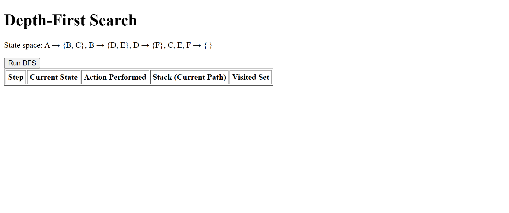
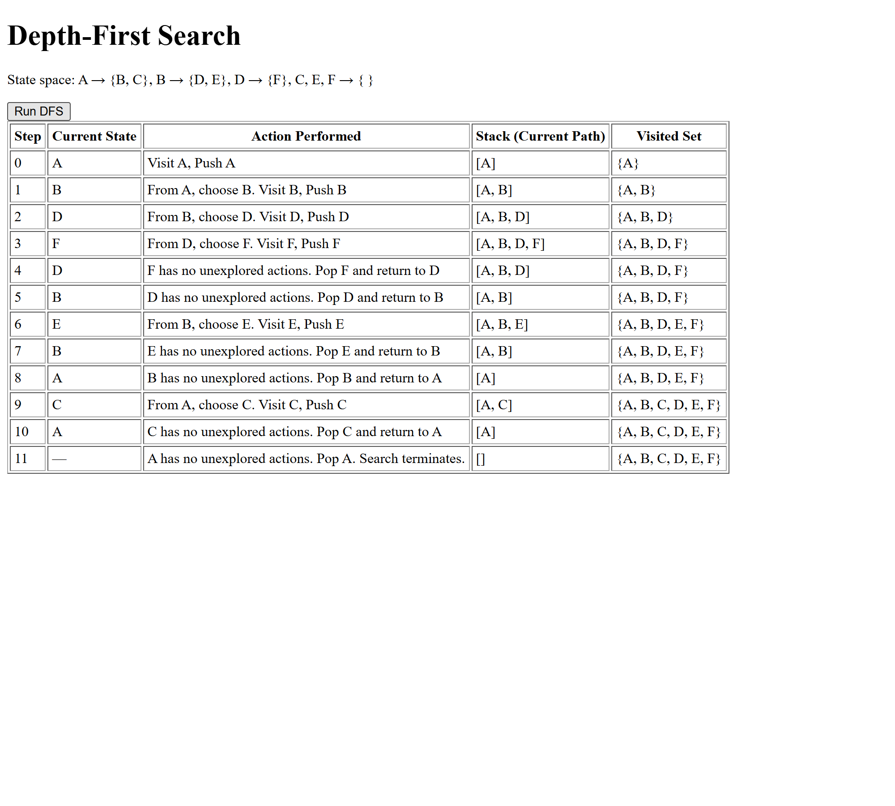
The verification is set out in full in Section 7.1. The short version is that all twelve rows agree: same current state, same action, same stack contents and same visited set at every step. That agreement is what made the rest of the project safe to build.
Replace the table with a drawn cave, where the stack is rendered as the diver’s rope, and add playback controls so the search can be stepped through in both directions.
Record and replay, and why the layout follows the search
Two architectural decisions were taken here that everything later depends on, and both were made for reasons worth stating.
The first: the search is recorded, then replayed. Rather than running the algorithm live and drawing as it goes, the search runs to completion immediately and returns a flat list of steps, each holding a complete snapshot of the stack and visited set. Playback is then just an index into that list. This makes stepping backwards exactly as cheap as stepping forwards, which a live implementation cannot offer without storing undo information anyway; it allows the student to click any line of the log and jump there; and it keeps the algorithm completely free of drawing code, so the file that implements DFS reads like the notes rather than like a rendering engine.
The second: the cave is laid out along the depth-first spanning tree, walked in the same neighbour order the search uses. This means depth on the screen is the depth the algorithm actually experiences, so "going deeper" is literally downward movement. Any edge that leads back to an already discovered chamber is drawn differently, as a dashed crawl-way, because the search will never travel down it.
v0.2 — site/js/search.js, the main loop
while (stack.length > 0 && steps.length < maxSteps) {
if (found) break;
var current = stack[stack.length - 1];
var depth = stack.length - 1;
var next = null;
if (depth < limit) {
var neighbours = orderNeighbours(graph.nodes[current].neighbours, opts.order);
for (var i = 0; i < neighbours.length; i++) {
var n = neighbours[i];
if (!graph.nodes[n]) continue;
var blocked = useVisited ? visitedSet[n] : (stack.indexOf(n) !== -1);
if (!blocked) { next = n; break; }
}
} else if (graph.nodes[current].neighbours.length > 0) {
cutoff = true;
snapshot({
kind: 'cutoff',
current: current,
action: 'Rope limit reached at depth ' + depth + '. ' + current +
' cannot be explored further.'
});
}
if (next !== null) {
markVisited(next);
stack.push(next);
expansions++;
if (stack.length > maxStack) maxStack = stack.length;
found = (goal !== null && next === goal);
snapshot({
kind: 'visit',
current: next,
from: current,
action: 'From ' + current + ', choose ' + next + '. Visit ' + next +
', Push ' + next
});
} else {
var popped = stack.pop();
var back = stack.length > 0 ? stack[stack.length - 1] : null;
snapshot({
kind: 'pop',
current: back,
popped: popped,
action: back === null
? popped + ' has no unexplored actions. Pop ' + popped +
'. Search terminates.'
: popped + ' has no unexplored actions. Pop ' + popped +
' and return to ' + back
});
}
}
var exhausted = steps.length >= maxSteps;This is the line that carries the whole metaphor. The rope is not an illustration of the stack; its geometry is read directly out of the stack array on every step.
v0.2 — site/js/cave.js
var points = stack.map(function (id) {
var p = P[id];
return p ? p.x + ',' + p.y : '';
}).filter(Boolean).join(' ');
state.ropeLine.setAttribute('points', points);
state.ropeGlow.setAttribute('points', points);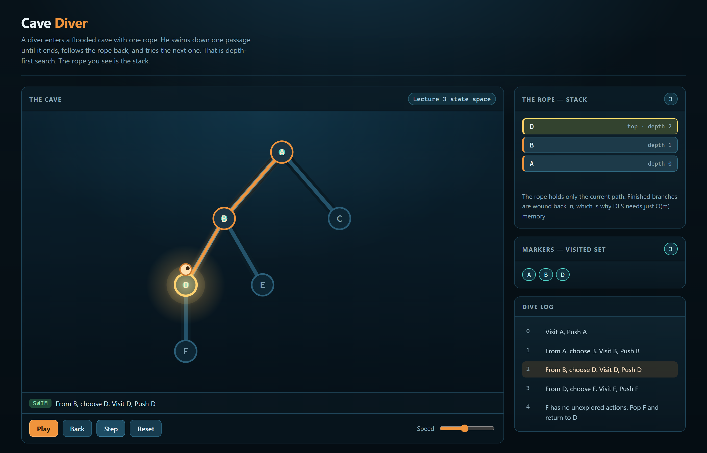
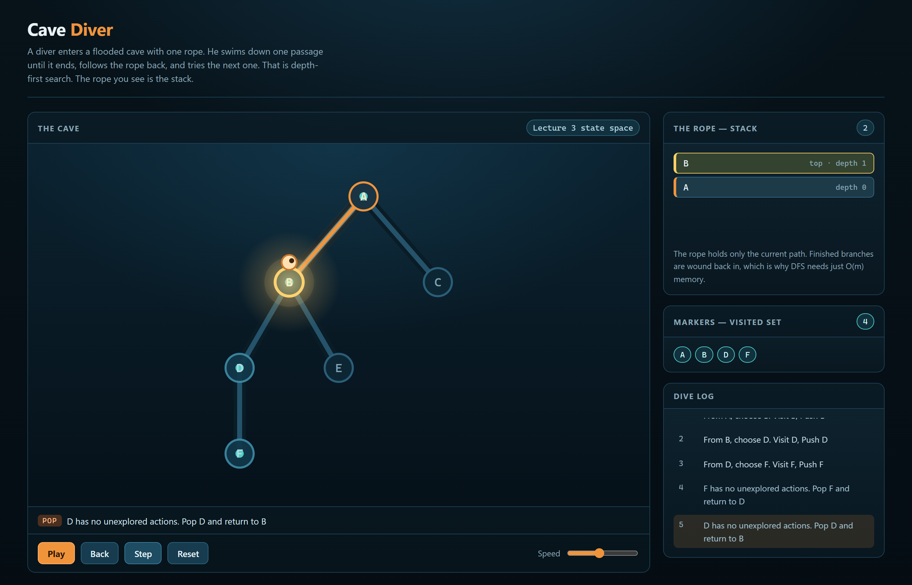
A deliberate colour rule was set here and held for the rest of the project: everything cold and blue belongs to the cave, which is the problem, and everything warm and amber belongs to the diver’s own memory, which is the stack. A student should be able to tell the data structure from the state space by colour alone, without reading a legend.
Implement the TensorFlow Playground idea: make the cave itself adjustable, and let the student discover the properties of DFS by changing conditions rather than by being told.
Every control has to prove something
The design rule adopted was that no control exists for its own sake. Each one had to make a specific claim from the lecture notes falsifiable by the student.
Switching markers off makes the search fail to terminate, which demonstrates that the visited set is part of the algorithm and not an optimisation. Adding an endless passage makes DFS commit and never return, demonstrating that it is not complete. Placing the treasure shallow but on the last branch makes DFS find it the long way round, demonstrating that it is not optimal. Limiting the rope makes the search terminate but miss deeper solutions, which is depth-limited search and the doorway to Lecture 7.
Every condition is also written into the URL, so a particular cave with a particular set of conditions can be handed to someone else as a link. Caves are generated from a seed for the same reason: a shared link has to rebuild the identical cave, not a similar one.
Exact branching was chosen over random branching so that the page can state honestly how many chambers a cave holds, which the complexity discussion depends on.
v0.3 — site/js/graph.js, seeded random
function rng(seed) {
var s = seed >>> 0;
return function () {
s = (s + 0x6D2B79F5) >>> 0;
var t = Math.imul(s ^ (s >>> 15), 1 | s);
t = (t + Math.imul(t ^ (t >>> 7), 61 | t)) ^ t;
return ((t ^ (t >>> 14)) >>> 0) / 4294967296;
};
}
function create(adjacency, root, meta) {v0.3 — site/js/graph.js, the endless passage
var endlessIds = [];
if (endless) {
var prev = root;
for (var e = 0; e < 1200; e++) {
var id = 'e' + e;
adjacency[id] = [];
adjacency[prev].push(id);
if (prev === root) adjacency[root].unshift(adjacency[root].pop());
endlessIds.push(id);
prev = id;
}
}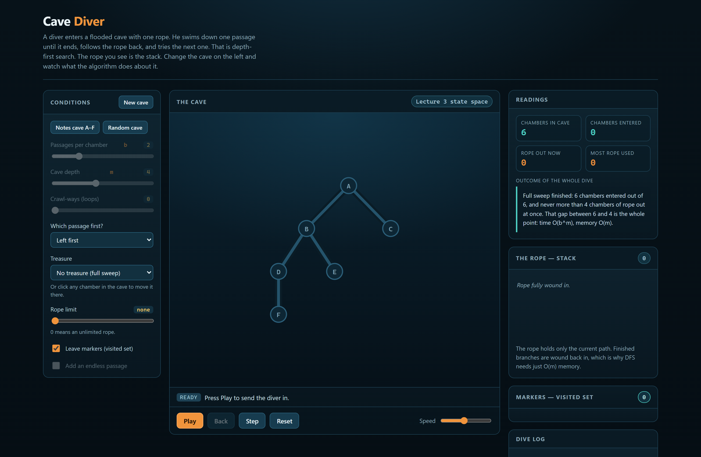
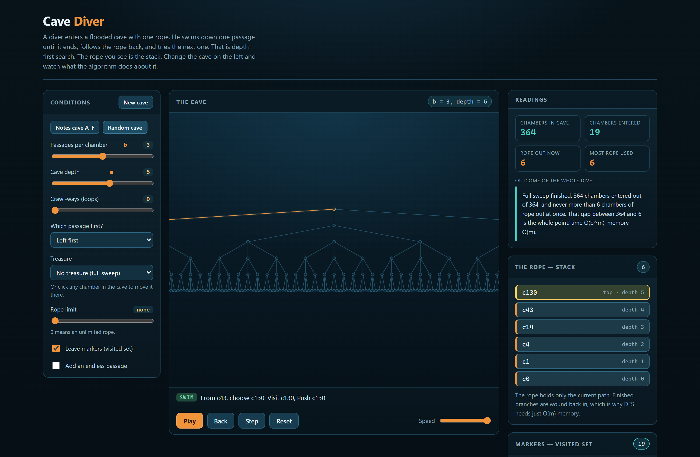
Switching markers off initially did nothing interesting, because the first implementation still blocked re-entry to anything on the current path. That is a cycle check, not an absence of memory, and it taught the wrong lesson. The code was changed so that switching markers off removes the check entirely.
v0.3 — site/js/search.js
// With markers switched off the diver has no way of telling an
// already-searched chamber from a new one, so nothing is ever
// blocked. On any cave this makes the search non-terminating:
// that is exactly why the notes list the visited set as an
// ingredient of the algorithm rather than an optimisation.
var blocked = useVisited ? visitedSet[n] : false;
if (!blocked) { next = n; break; }The consequence is correct and slightly surprising: without markers the search fails to terminate even on a cave with no loops at all, because after backtracking the diver has no way of knowing he has already searched the branch he just left. The page says so in those words.
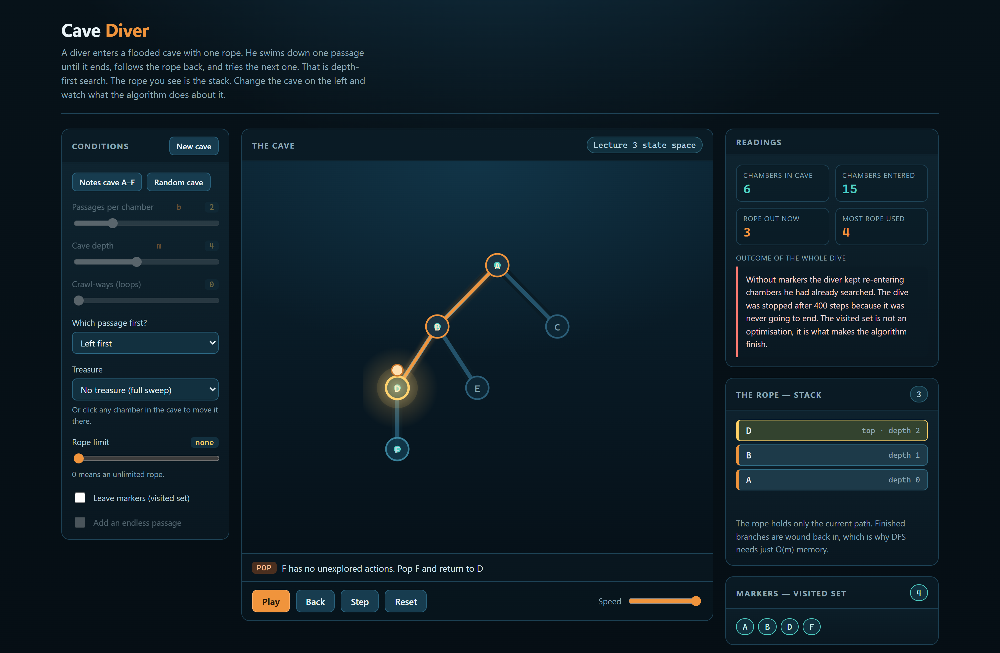
A control that demonstrated the opposite of its purpose
The first endless passage was sixty chambers long. The diver went down it, reached the bottom, came back, and found the treasure. The verdict then reported success.
This is worse than useless. The control is called "endless passage" and exists to demonstrate that DFS is not complete, and it was demonstrating that DFS is complete and merely slow. A sixty-chamber corridor is not an infinite branch; it is a long finite one.
The fix needed the passage to be long enough that the search is still descending when the page stops it, which means over a thousand chambers. That created a drawing problem: at normal spacing, 1,200 chambers is a drawing roughly 70,000 pixels tall. The solution was to pack the shaft tightly — seven pixels per chamber instead of ninety-two — and draw its chambers small and dim. It reads as a bottomless shaft descending into the dark, which is exactly what it represents, and the real cave keeps its normal proportions because the shaft is excluded from the sizing maths.
v0.3 — site/js/graph.js, compressing the shaft
// The endless shaft is packed tightly so that a 1200-chamber descent
// is still a scrollable drawing rather than a mile of blank water.
var shaftStep = 7;
var positions = {};
var maxCol = 0, maxDepth = 0, maxY = 0;
tree.reachable.forEach(function (id) {
var c = col[id] || 0, d = tree.depth[id] || 0;
var y = isEndless(id)
? padY + gapY + (d - 1) * shaftStep
: padY + d * gapY;
if (c > maxCol) maxCol = c;
if (!isEndless(id) && d > maxDepth) maxDepth = d;
if (y > maxY) maxY = y;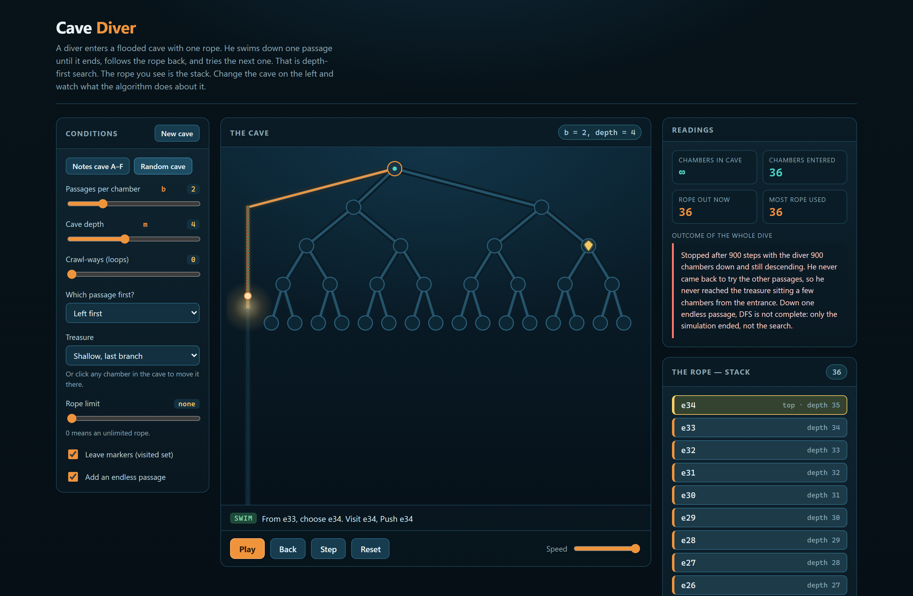
Turning a rendering limit into the lesson
With b = 5 and m = 8 the generator is asked for 488,281 chambers. Building that graph and attempting to draw it would hang the browser.
The obvious response is to clamp the sliders. That was rejected, because the number itself is the most important thing on the page. Combinatorial explosion is the reason the whole of Module 1 exists, and a student who drags a slider to five and is quietly prevented from doing so learns nothing.
So the page refuses to draw and prints the figure instead, next to the rope length. A cave can be described long before it can be drawn, and the gap between 488,281 and 8 is the entire trade-off in two numbers. A limitation of the renderer was turned into the clearest statement of complexity on the site.
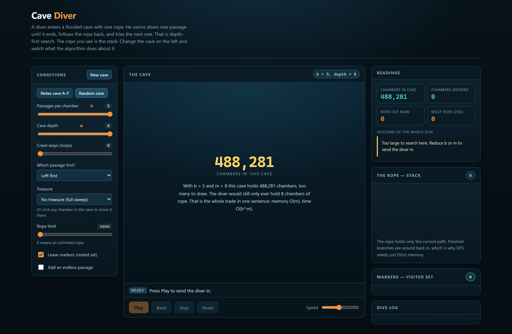
Two separate layout faults appeared in this version and both took more than one attempt. They are documented in full in Section 6.4, because the second one required rewriting how the drawing is sized.
Let the student be the diver. The cave is dark, choices are made without knowing what lies ahead, and the game enforces the rule from the notes.
Deciding what the game should refuse
The design question here is what exactly to enforce. Depth-first search does not specify which unexplored passage to take; it specifies only that you must take one if one exists. So the game gives the player complete freedom over which passage, and refuses only two things: moving to a chamber with no passage from where you are, and turning back while an unexplored passage remains.
Fog of war is not decoration either. Without it the player can see the treasure and walk to it, which is an informed search and therefore the wrong algorithm. Chambers become visible only once the diver has been somewhere adjacent to them: you can make out an opening from where you stand, but not what lies behind it.
Prevention versus explanation
The first implementation disabled the backtrack button whenever backtracking was illegal. This is conventional interface design and it is exactly wrong here.
A greyed-out button prevents the mistake. It does not explain it. The student learns that the button is sometimes grey, which is a fact about the website rather than a fact about depth-first search. The single most important invariant in the algorithm — that you may only backtrack from a chamber with nothing unexplored left — was being hidden behind an interface convention.
The button was made permanently clickable. Pressing it when the move is illegal now produces a refusal naming the number of unexplored passages remaining and restating the rule. Being told why the cave will not let you turn back teaches the invariant; being unable to click does not.
This was caught by the screenshot tool, which could not click the disabled button and failed the build. A test that could not perform the most instructive action in the game turned out to be a design review.
v0.4 — site/js/dive.js, refusing a move
function popBack() {
if (S.status !== 'playing') return;
var here = current();
if (S.stack.length === 1) {
say('You are back at the cave mouth with the rope fully wound in. ' +
'The search is over.', 'info');
return;
}
var left = unexploredFrom(here);
if (left.length > 0) {
S.wrong++;
say('Not yet. There ' + (left.length === 1 ? 'is' : 'are') + ' still ' +
left.length + ' unexplored passage' + (left.length === 1 ? '' : 's') +
' out of this chamber. Depth-first search only backtracks when the ' +
'current chamber has nothing unexplored left.', 'bad');
render();
return;
}
S.stack.pop();
say('Popped ' + here + '. You follow the rope back to ' + current() + '.', 'good');
render();
}
function finish() {v0.4 — site/js/dive.js, keeping the button live
// Deliberately still clickable when the move is illegal. Greying it
// out would prevent the mistake; letting it be made and explaining
// the refusal is what actually teaches the invariant.
var here = current();
var canPop = S.status === 'playing' && S.stack.length > 1 &&
unexploredFrom(here).length === 0;
dom.popBtn.disabled = S.status !== 'playing';
dom.popBtn.classList.toggle('is-blocked', !canPop);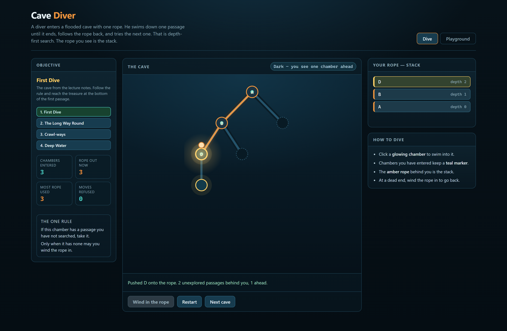
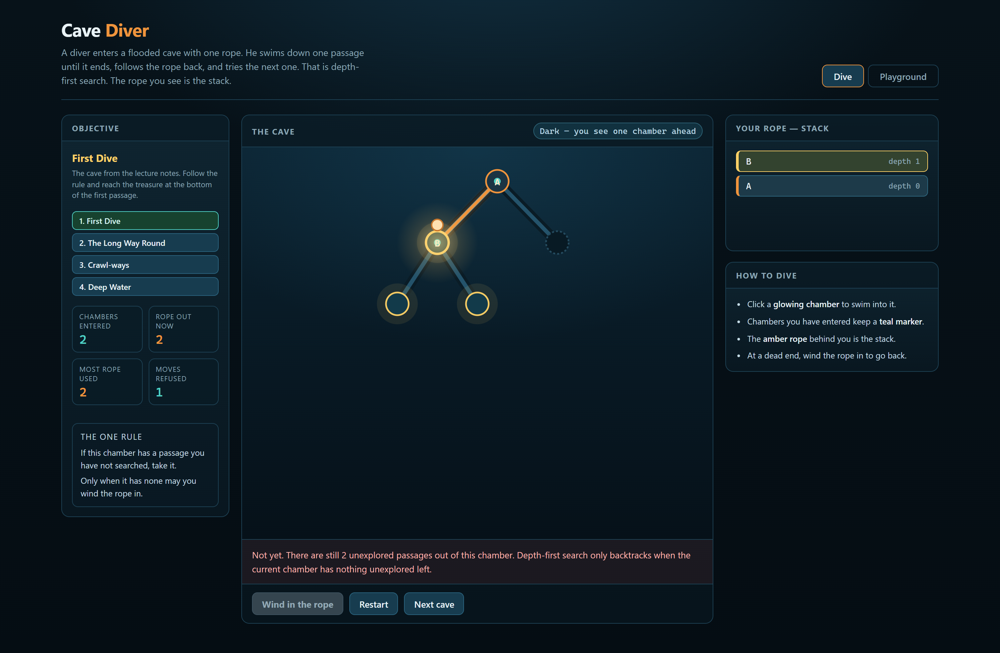
Because the treasure was drawn whenever its chamber had been glimpsed, a player could see the gold marker one chamber ahead and make a beeline for it. That silently converts the game from an uninformed search into an informed one, which is the opposite of what it is demonstrating. The treasure is now hidden until its chamber is actually entered.
v1.0 — site/css/styles.css
/* You cannot see treasure through rock. Without this the dive stops
* being an uninformed search the moment the goal comes into range. */
.chamber.is-glimpsed .treasure { opacity: 0; }Place DFS in context by running it against breadth-first search and against iterative deepening over an identical cave.
Reporting a comparison without declaring a winner
The notes are careful not to rank these algorithms. They frame the choice as situational: if memory is scarce, DFS; if you need the shortest solution, BFS; if the search space is enormous, probably not BFS. The view was built to match that framing, so it declares no winner. It reports two numbers for each — chambers entered, and memory held — and says what each bought.
Representing BFS honestly required breaking the metaphor on purpose. One diver cannot expand a frontier; he cannot be in nine chambers at once. Drawing BFS as a single diver teleporting around would have concealed precisely the thing that makes it expensive. It is drawn as a team, each member holding a rope, so the frontier is visibly many ropes. The path to the chamber currently being expanded is still drawn, but faintly, so that it is not mistaken for the queue.
Iterative deepening is reported with its total cost across all restarts rather than just the final pass, which is the honest figure and the one that makes the comparison meaningful.
v0.5 — site/js/search.js, breadth-first expansion
while (queue.length > 0 && steps.length < maxSteps) {
var node = queue.shift();
expanded.push(node);
found = (goal !== null && node === goal);
var added = [];
if (!found) {
var neighbours = orderNeighbours(graph.nodes[node].neighbours, opts.order);
for (var i = 0; i < neighbours.length; i++) {
var n = neighbours[i];
if (!graph.nodes[n] || discovered[n]) continue;
discovered[n] = true;
parent[n] = node;
queue.push(n);
added.push(n);
}
}
if (queue.length > maxFrontier) maxFrontier = queue.length;
steps.push({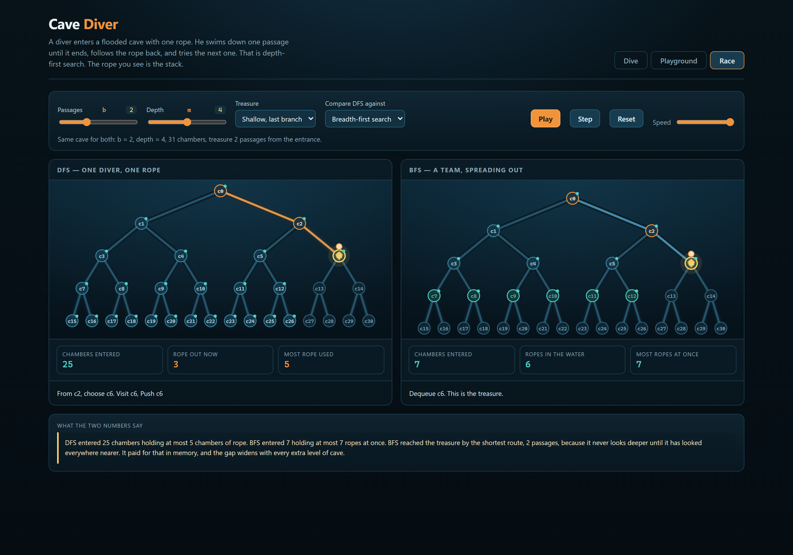
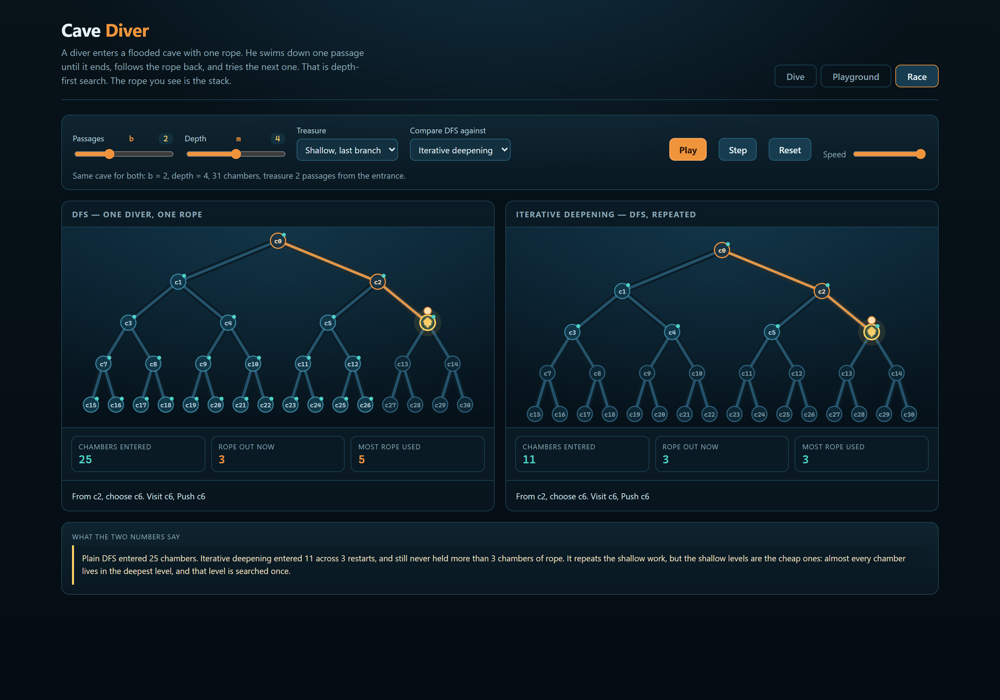
Add the written explanation the brief asked for, connect the pseudocode to the animation, and fix the remaining visual faults.
Generating the explanation from the implementation
The Learn page could have been written as static prose. It was not, in one respect that matters: the worked trace table is generated at page load by the same search engine the game runs.
The reason is drift. Hand-written documentation and the code it documents separate over time, and a report that claims the implementation matches the notes should not then print a trace copied by hand. Generating it means the explanation cannot disagree with the implementation, because it is produced by the implementation.
The same thinking produced the pseudocode panel. The algorithm and the picture are the same thing said twice, and lighting the executing line as the diver moves is what joins them up for a student who can follow one but not the other.
v1.0 — site/js/app.js, the trace table is generated
// The trace table is generated by the same engine the game runs, so the
// explanation cannot drift away from the implementation.
var run = NS.search.dfs(NS.graph.notesCave(), { start: 'A' });
var body = document.querySelector('#learn-trace tbody');
run.steps.forEach(function (s, i) {
var row = document.createElement('tr');
row.className = 'kind-' + s.kind;
row.innerHTML =
'<td>' + i + '</td>' +
'<td>' + (s.current || '—') + '</td>' +
'<td>' + s.action + '</td>' +
'<td class="mono">[' + s.stack.join(', ') + ']</td>' +
'<td class="mono">{' + s.visited.slice().sort().join(', ') + '}</td>';
body.appendChild(row);v1.0 — site/js/app.js, lighting the executing line
function highlightPseudo(step) {
var line = 0;
if (step) {
if (step.index === 0) line = 1;
else if (step.kind === 'visit') line = 5;
else if (step.kind === 'pop') line = 7;
else if (step.kind === 'cutoff') line = 4;
}
var rows = dom.pseudo.querySelectorAll('li');
for (var i = 0; i < rows.length; i++) {
rows[i].classList.toggle('is-active', Number(rows[i].dataset.line) === line);
}
}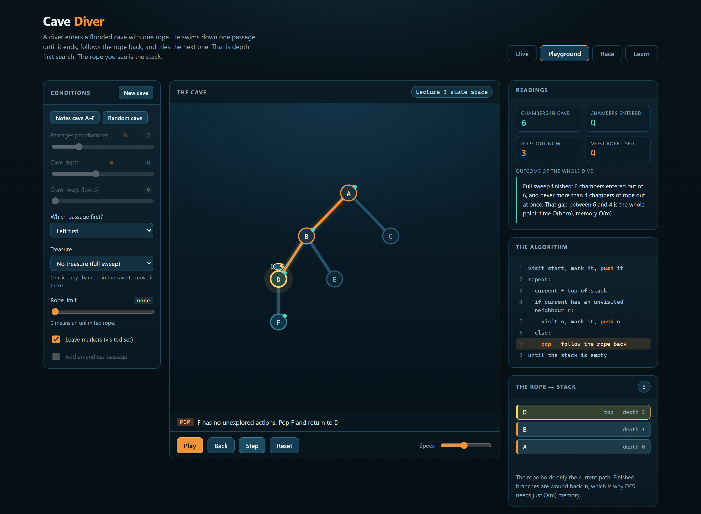
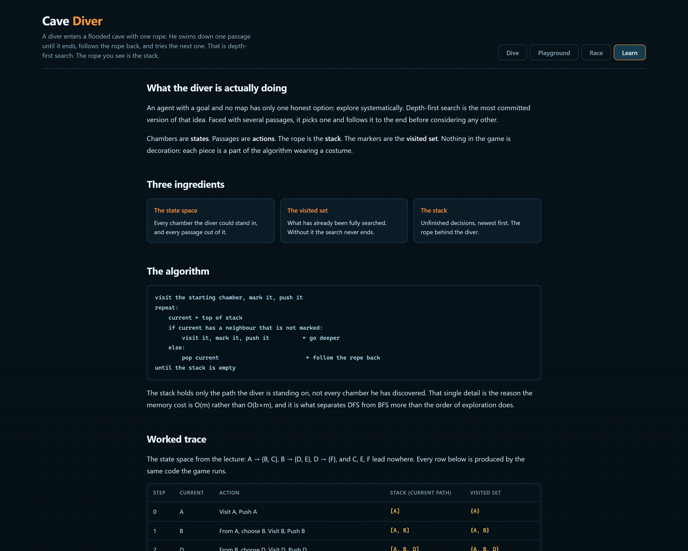
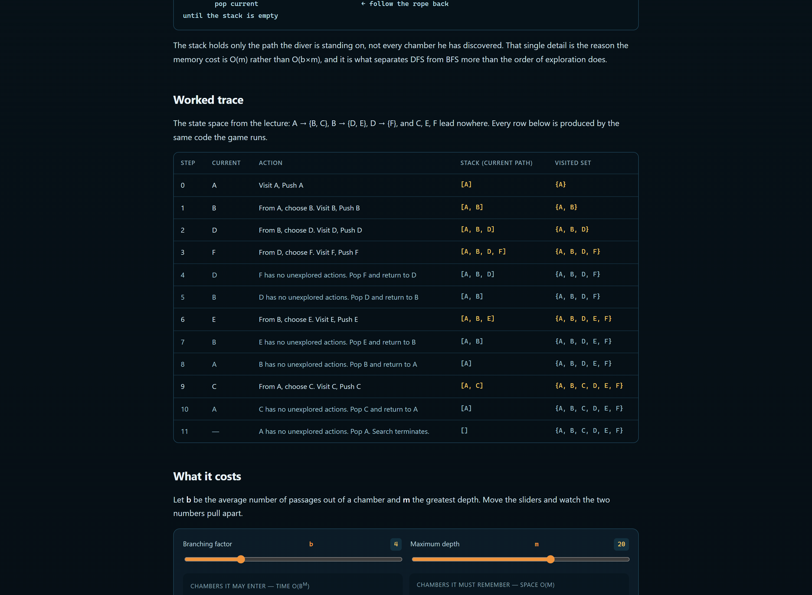
| Fault | Fix |
|---|---|
| The visited marker was drawn at the centre of a chamber, on top of its label, making both hard to read | Moved to the chamber rim as a badge |
| The diver was a plain circle, indistinguishable from a chamber | Drawn as a figure with a fin, body, head and mask |
| On a phone, the controls panel pushed the cave below the fold | The cave is ordered first under 860 pixels wide |
| Two CSS values were corrupted during generation, one colour and one background, which would have failed silently | Caught on review and corrected before the first screenshot |
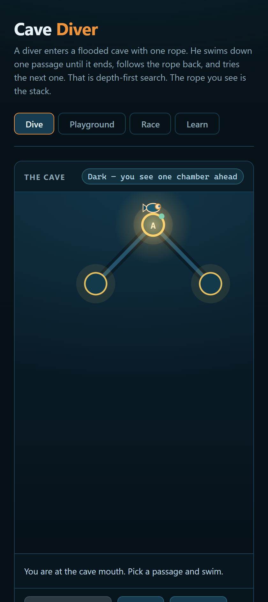
Problems that crossed several versions, or whose resolution shaped the architecture. Section 5 records what each version added; this section records what had to be rethought.
Every algorithm on the site returns the same thing: a flat array of steps, each holding a complete snapshot of the stack, the visited set, the current chamber and a sentence describing the action. Nothing is computed during playback.
| Consequence | Why it mattered |
|---|---|
| Stepping backwards is free | A live implementation would need an undo log, which is the same snapshots stored less conveniently |
| Any step is directly reachable | The student can click a line in the dive log and jump to that moment |
| Algorithms contain no drawing code | search.js reads like the lecture notes rather than like a rendering engine |
| Three algorithms share one renderer | BFS and IDS needed no new drawing code, only a frontier field on the step |
The cost is memory: a 364-chamber cave produces several hundred steps, each carrying copies of its arrays. At these sizes it is irrelevant, and the cap described in Section 6.6 keeps it that way.
The first renderer rewrote the class attribute of every chamber on every step. With the endless passage enabled a cave can hold over 1,200 chambers, which meant 1,200 attribute writes per frame at up to thirty frames a second, and playback visibly stuttered.
site/js/cave.js — comparing before writing
// Only touch the chambers whose appearance actually changed. With an
// endless shaft a cave can hold well over a thousand chambers, and
// rewriting every class on every step made playback stutter.
Object.keys(state.chambers).forEach(function (id) {
var shaft = P[id] && P[id].endless;
var classes = ['chamber'];
if (shaft) classes.push('is-shaft');
if (state.onChamberClick && !shaft) classes.push('is-clickable');
// Dive mode passes `seen` and `legal`; without them everything is
// visible, which is what the playground wants.
if (seen) {
if (!seen[id]) classes.push('is-hidden');
else if (!isVisited[id]) classes.push('is-glimpsed');
if (legal[id]) classes.push('is-legal');
}
if (id === state.goal && (!seen || isVisited[id])) classes.push('is-goal');
if (isVisited[id]) classes.push('is-visited');
if (frontier[id]) classes.push('is-frontier');
if (onRope[id]) classes.push('is-on-rope');
if (id === current) classes.push('is-current');
if (isVisited[id] && !onRope[id]) classes.push('is-finished');
var joined = classes.join(' ');
if (state.prevClass[id] !== joined) {
state.chambers[id].setAttribute('class', joined);
state.prevClass[id] = joined;
}
});
var lit = {};The same treatment was applied to passages. The fix is ordinary, but it is worth recording that the need for it came directly from an earlier teaching decision: the shaft had to be long to be honest, and making it long is what exposed the performance fault.
A bug with no error message
Chambers shrink as caves grow, so stroke widths are calculated in JavaScript and written as SVG presentation attributes. The stylesheet also set stroke-width for the same elements.
CSS wins over presentation attributes. Every calculated width was therefore being discarded, and passages in a 364-chamber cave were drawn at the same thickness as in a six-chamber one, swamping the chambers entirely. Nothing errored; the drawing was simply wrong in a way that looked like a layout problem.
The rule adopted was that the stylesheet carries colour only, and geometry that must scale is set in script. The same mistake had been made with the chamber label font size and was corrected at the same time.
This took three attempts and is the clearest example in the project of a first answer being plausible and wrong.
Horizontal spacing was chosen from the total chamber count, and the drawing was never scaled below 42 per cent. A tree with b = 3 and m = 5 has 243 leaves and only 5 levels, so it is roughly forty times wider than it is tall. It overflowed the frame and was cut off.
Removing the minimum scale made the whole tree fit, at about 14 per cent, which compressed 290 pixels of height into 41. The cave became an unreadable thread across the middle of an otherwise empty panel. The first fix had produced a worse result than the fault.
Measuring the right thing
The error in both earlier attempts was choosing horizontal spacing from the total number of chambers. The quantity that actually determines a tree’s width is its number of leaves, and that is not known until columns have been assigned.
The layout was reordered: assign columns first, count the leaves, then choose spacing from that count, then compute positions. Vertical spacing was fixed at a comfortable value, since depth is capped at eight and vertical room is never the scarce resource.
A minimum scale was reinstated, because the honest answer is that some caves are genuinely too wide for the panel. Those scroll sideways, and the view follows the diver automatically so the student never has to manage the scrollbar.
site/js/graph.js — columns first, then spacing
// Columns are assigned first, because the sensible horizontal spacing
// depends on how many leaves the tree actually has. A tree with 243
// leaves and 5 levels is 40 times wider than it is tall; spacing it
// like a small tree produces an unreadable thread.
var col = {};
var nextLeaf = 0;
function place(id) {
var kids = tree.children[id];
if (!kids || kids.length === 0) { col[id] = nextLeaf++; return; }
kids.forEach(place);
col[id] = (col[kids[0]] + col[kids[kids.length - 1]]) / 2;
}
place(graph.root);
var leaves = Math.max(1, nextLeaf);
var gapX = opts.gapX ||
(leaves <= 10 ? 120 : leaves <= 32 ? 56 : leaves <= 90 ? 30 : leaves <= 260 ? 18 : 12);
var size = opts.nodeRadius || Math.max(3.5, Math.min(17, gapX * 0.42));
// Depth is capped at 8, so vertical room is never the scarce resource.
var gapY = opts.gapY || Math.max(size * 3.4, 92);
var padX = opts.padX || Math.max(40, size * 3);
var padY = opts.padY || Math.max(46, size * 3);The dive log kept the current step in view with the browser’s standard scrollIntoView call. That method scrolls every scrollable ancestor, including the page, so during playback the whole document crept downwards and the cave left the screen. It was replaced with arithmetic on the log panel’s own scroll position.
site/js/app.js
// scrollIntoView would drag the whole page along with it, so the log
// is scrolled by hand instead.
var top = row.offsetTop;
var box = dom.log;
if (top < box.scrollTop || top + row.offsetHeight > box.scrollTop + box.clientHeight) {
box.scrollTop = top - box.clientHeight / 2 + row.offsetHeight / 2;
}A cap that pretends to be a result is a lie
Two situations on the site cannot terminate: markers switched off, and the endless passage. Both are stopped by a step cap.
A cap is a lie if the page presents the result as the algorithm finishing. The wording was written carefully so that it never does. With markers off the page says the dive was stopped because it was never going to end. With the endless passage it says that only the simulation ended, not the search. The caps live in one function alongside a comment stating that they are not part of the algorithm, so that a reader of the source is not misled either.
This is a small point of intellectual honesty, but it is the difference between demonstrating incompleteness and merely appearing to.
site/js/app.js — caps declared in one place
function searchOptions() {
var limit = Number(dom.ropeLimit.value);
return {
start: state.graph.root,
goal: state.goal,
order: dom.order.value,
limit: limit === 0 ? Infinity : limit,
useVisited: dom.markers.checked,
// Caps, not part of the algorithm: a run that cannot end has to be
// stopped by something, and the page says so when it happens.
maxSteps: !dom.markers.checked ? 400 : (dom.endless.checked ? 900 : 6000)
};
}
/* A cave can be described long before it can be drawn. When the shapeThe course notes print a twelve-step trace of DFS over the A–F state space, giving for each step the current state, the action, the stack and the visited set. The implementation was required to reproduce it exactly. The table below is the output of the project code, captured from the running page.
| Step | Current | Action | Stack | Visited |
|---|---|---|---|---|
| 0 | A | Visit A, Push A | [A] | {A} |
| 1 | B | From A, choose B. Visit B, Push B | [A, B] | {A, B} |
| 2 | D | From B, choose D. Visit D, Push D | [A, B, D] | {A, B, D} |
| 3 | F | From D, choose F. Visit F, Push F | [A, B, D, F] | {A, B, D, F} |
| 4 | D | F has no unexplored actions. Pop F and return to D | [A, B, D] | {A, B, D, F} |
| 5 | B | D has no unexplored actions. Pop D and return to B | [A, B] | {A, B, D, F} |
| 6 | E | From B, choose E. Visit E, Push E | [A, B, E] | {A, B, D, E, F} |
| 7 | B | E has no unexplored actions. Pop E and return to B | [A, B] | {A, B, D, E, F} |
| 8 | A | B has no unexplored actions. Pop B and return to A | [A] | {A, B, D, E, F} |
| 9 | C | From A, choose C. Visit C, Push C | [A, C] | {A, B, C, D, E, F} |
| 10 | A | C has no unexplored actions. Pop C and return to A | [A] | {A, B, C, D, E, F} |
| 11 | — | A has no unexplored actions. Pop A. Search terminates. | [] | {A, B, C, D, E, F} |
All twelve rows agree with the notes: the same current state, the same action, the same stack contents and the same visited set at every step. In particular the stack never exceeds four entries, confirming that the implementation follows the notes’ formulation in which the stack holds the current path rather than a frontier.
The notes work through b = 4, m = 20 and give 420 as approximately 1.1 trillion, against 20 states remembered. The site’s calculator produces the same figures from the same inputs.
The screenshot tool records page errors and failed console messages for every shot, and can extract the text of a named element so that the state shown in an image is also asserted in the build log. This caught the disabled-button design fault described in Section 5.4, and verified each of the playground verdicts:
| Condition | Verdict produced |
|---|---|
| Markers off | Stopped after 400 steps; the visited set is what makes the algorithm finish |
| Endless passage | Stopped after 900 steps, diver 900 chambers down and still descending; the treasure a few chambers from the entrance was never reached |
| b = 3, depth = 5, no treasure | 364 chambers entered, never more than 6 chambers of rope out |
| b = 5, depth = 8 | Not drawn: 488,281 chambers against 8 of rope |
| DFS against BFS, shallow treasure | DFS 25 chambers and 5 rope; BFS 7 chambers and 7 ropes |
| DFS against IDS | IDS 11 chambers across 3 restarts, never more than 3 of rope |
Stated plainly, since a report claiming more than it checked would be worth less:
The site is served by GitHub Pages directly from the repository. There is no build step: the browser receives the files exactly as they are committed, which keeps the deployed artefact identical to the source and the hosting free and indefinite.
| Item | Value |
|---|---|
| Live site | https://akshath-pg.github.io/cave-diver-dfs/ |
| Repository | https://github.com/Akshath-PG/cave-diver-dfs |
| Hosting | GitHub Pages, served from the site folder on the main branch |
| Build step | None |
| Runtime dependencies | None |
site/
index.html four views in one page
css/styles.css
js/graph.js cave model, generation, tree layout
js/search.js DFS, BFS, iterative deepening
js/cave.js SVG renderer (rope, markers, fog of war)
js/dive.js player mode and its levels
js/race.js side-by-side comparison
js/app.js playground, learn page, mode switching
tools/
shoot.js screenshot capture for the report
report.js builds this document
docs/
screenshots/ one set per version
README.mdEvery commit is authored solely by the student. No co-author trailer was added and no collaborator was added to the GitHub project, as required by the brief.
| Commit | Date | Subject |
|---|---|---|
| a085257 | 06 Nov 2026 | v0.1: DFS trace table matching the lecture notes |
| a753477 | 06 Nov 2026 | v0.2: draw the cave, and draw the stack as the diver's rope |
| 9428092 | 06 Nov 2026 | v0.3: the playground - change the cave, watch DFS react |
| 1842c5e | 07 Nov 2026 | v0.4: Dive mode - the player is the diver |
| 84f5a28 | 07 Nov 2026 | v0.5: Race mode - DFS against BFS and iterative deepening |
| 3841da0 | 07 Nov 2026 | v1.0: Learn mode, live pseudocode, and polish |
| 9024d99 | 07 Nov 2026 | Add the project report and the tooling that builds it |
| 6b96859 | 07 Nov 2026 | Add GitHub Pages deployment workflow |
| a7abd8e | 07 Nov 2026 | Regenerate the report with the live site and repository URLs |
The brief states that the evaluation is of the thought process and the refinement, not of whether an AI can write a search algorithm. This section is therefore an honest account of what the assistant produced unaided, what had to be corrected, and where human direction changed the outcome.
| Fault | Nature of the error |
|---|---|
| Endless passage only 60 chambers long | Conceptual. The feature demonstrated the opposite of its purpose, and did so convincingly enough to pass a casual look. |
| Backtrack button disabled when illegal | Pedagogical. Correct interface convention, wrong for a teaching tool: it prevented the mistake instead of explaining it. |
| Treasure visible through rock | Conceptual. Quietly turned an uninformed search into an informed one. |
| Markers-off still blocked cycles | Conceptual. Implemented a cycle check rather than an absence of memory, so the control taught nothing. |
| Layout sized from chamber count | Analytical. Measured the wrong quantity, then produced a worse second attempt before fixing it properly. |
| CSS overriding scaled stroke widths | Technical. A silent cascade conflict with no error message. |
| scrollIntoView scrolling the page | Technical. A standard API with a wider effect than intended. |
| Two corrupted CSS values | Generation. Malformed output that would have failed silently; caught on review. |
| Visited marker drawn over the chamber label | Visual. Only became apparent once caves grew dense. |
The pattern is worth naming. Almost none of these were algorithm errors, and most would have gone unnoticed by anyone not asking what each feature was supposed to teach. The failure mode of a capable assistant on a task like this is not broken code. It is code that works, looks finished, and quietly demonstrates the wrong thing.
Two instructions changed the project more than any amount of generation did.
The cave diver metaphor replaced a proposed warehouse robot. It is better because it is literally true rather than merely apt: divers really do lay guide lines and follow them out, so depth becomes an actual direction rather than a figure of speech.
The TensorFlow Playground reference changed the kind of thing being built. Without it the site would have been a well-made animation of DFS. With it, every claim in the notes became a control the student can switch off to watch the algorithm fail. That is the difference between being shown that DFS is not complete and breaking it yourself, and it accounts for the largest part of the site.
The finished site teaches depth-first search three times over: by making the student perform it under the algorithm’s own constraint, by letting them dismantle it one property at a time, and by setting it against its alternatives. The implementation reproduces the lecture notes’ worked trace exactly, and the explanatory text is generated by the same engine that runs the game.
The most useful thing learned in building it was that the assistant’s errors clustered in a single place: not in the algorithm, which was right immediately, but in whether each feature actually demonstrated what it claimed to. An endless passage that ends, a treasure visible through rock, a button that prevents the instructive mistake — each was working code that taught the wrong lesson. Finding those required asking of every feature not whether it worked, but what a student would conclude from it. That question, repeatedly asked, is most of the difference between the first output and this one.
The full source of the site at v1.0, as deployed. Reproduced from the repository.
The page: four views in one document.
<!DOCTYPE html>
<html lang="en">
<head>
<meta charset="utf-8">
<meta name="viewport" content="width=device-width, initial-scale=1">
<title>Cave Diver — Depth-First Search</title>
<link rel="icon" href="data:image/svg+xml,<svg xmlns='http://www.w3.org/2000/svg' viewBox='0 0 16 16'><text y='13' font-size='13'>🦦</text></svg>">
<link rel="stylesheet" href="css/styles.css">
</head>
<body>
<div class="wrap">
<header class="masthead">
<div>
<h1>Cave <span>Diver</span></h1>
<p class="tagline">
A diver enters a flooded cave with one rope. He swims down one passage until it
ends, follows the rope back, and tries the next one. That is depth-first search.
The rope you see is the stack.
</p>
</div>
<nav class="modes" id="modes">
<button class="mode is-active" data-view="dive">Dive</button>
<button class="mode" data-view="playground">Playground</button>
<button class="mode" data-view="race">Race</button>
<button class="mode" data-view="learn">Learn</button>
</nav>
</header>
<!-- ===================== DIVE ===================== -->
<section class="view" id="view-dive">
<div class="stage">
<aside class="card">
<div class="card-head"><h2>Objective</h2></div>
<div class="card-body control-list">
<div>
<p class="level-name" id="level-name">First Dive</p>
<p class="hint" id="level-brief"></p>
</div>
<div class="level-list" id="levels"></div>
<div class="readings">
<div class="reading">
<span class="r-label">Chambers entered</span>
<span class="r-value" id="d-entered">1</span>
</div>
<div class="reading">
<span class="r-label">Rope out now</span>
<span class="r-value rope" id="d-rope">1</span>
</div>
<div class="reading">
<span class="r-label">Most rope used</span>
<span class="r-value rope" id="d-maxrope">1</span>
</div>
<div class="reading">
<span class="r-label">Moves refused</span>
<span class="r-value" id="d-wrong">0</span>
</div>
</div>
<div class="rules">
<p class="rules-title">The one rule</p>
<p>If this chamber has a passage you have not searched, take it.</p>
<p>Only when it has none may you wind the rope in.</p>
</div>
</div>
</aside>
<section class="card">
<div class="card-head">
<h2>The Cave</h2>
<span class="chip">Dark — you see one chamber ahead</span>
</div>
<div class="cave-frame" id="dive-frame">
<svg id="dive-cave" role="img" aria-label="Dark cave; click a passage to swim"></svg>
</div>
<div class="dive-message is-info" id="dive-message"></div>
<div class="controls">
<button id="dive-pop" class="primary">Wind in the rope</button>
<button id="dive-restart">Restart</button>
<button id="dive-next">Next cave</button>
</div>
</section>
<aside class="panel-stack">
<section class="card">
<div class="card-head"><h2>Your Rope — Stack</h2></div>
<div class="card-body">
<div class="stack-view" id="dive-stack"></div>
</div>
</section>
<section class="card is-lesson" id="dive-lesson" hidden>
<div class="card-head"><h2>What just happened</h2></div>
<div class="card-body">
<p class="lesson-text" id="dive-lesson-text"></p>
</div>
</section>
<section class="card">
<div class="card-head"><h2>How to dive</h2></div>
<div class="card-body">
<ul class="howto">
<li>Click a <b>glowing chamber</b> to swim into it.</li>
<li>Chambers you have entered keep a <b>teal marker</b>.</li>
<li>The <b>amber rope</b> behind you is the stack.</li>
<li>At a dead end, wind the rope in to go back.</li>
</ul>
</div>
</section>
</aside>
</div>
</section>
<!-- ===================== PLAYGROUND ===================== -->
<section class="view" id="view-playground" hidden>
<div class="stage">
<aside class="card controls-card">
<div class="card-head">
<h2>Conditions</h2>
<button id="new-cave" class="mini">New cave</button>
</div>
<div class="card-body control-list">
<div class="preset-row">
<button id="preset-notes" class="mini">Notes cave A–F</button>
<button id="preset-random" class="mini">Random cave</button>
</div>
<div class="control">
<label for="branching">Passages per chamber <b>b</b> <output id="branching-out">2</output></label>
<input id="branching" type="range" min="1" max="5" value="2">
</div>
<div class="control">
<label for="depth">Cave depth <b>m</b> <output id="depth-out">4</output></label>
<input id="depth" type="range" min="1" max="8" value="4">
</div>
<div class="control">
<label for="loops">Crawl-ways (loops) <output id="loops-out">0</output></label>
<input id="loops" type="range" min="0" max="10" value="0">
</div>
<div class="control">
<label for="order">Which passage first?</label>
<select id="order">
<option value="left">Left first</option>
<option value="right">Right first</option>
<option value="random">Random</option>
</select>
</div>
<div class="control">
<label for="treasure">Treasure</label>
<select id="treasure">
<option value="none">No treasure (full sweep)</option>
<option value="shallow-far">Shallow, last branch</option>
<option value="shallow-near">Shallow, first branch</option>
<option value="deep">Deepest chamber</option>
</select>
<p class="hint">Or click any chamber in the cave to move it there.</p>
</div>
<div class="control">
<label for="rope-limit">Rope limit <output id="rope-limit-out">none</output></label>
<input id="rope-limit" type="range" min="0" max="8" value="0">
<p class="hint">0 means an unlimited rope.</p>
</div>
<label class="toggle">
<input id="markers" type="checkbox" checked>
<span>Leave markers (visited set)</span>
</label>
<label class="toggle">
<input id="endless" type="checkbox">
<span>Add an endless passage</span>
</label>
</div>
</aside>
<section class="card">
<div class="card-head">
<h2>The Cave</h2>
<span class="chip" id="cave-name">Lecture 3 state space</span>
</div>
<div class="cave-frame" id="cave-frame">
<svg id="cave" role="img" aria-label="Cave map showing the diver and the rope"></svg>
<div class="too-big" id="too-big" hidden>
<p class="too-big-number" id="too-big-number">0</p>
<p class="too-big-label">chambers in this cave</p>
<p class="too-big-text" id="too-big-text"></p>
</div>
</div>
<div class="status-line" id="status">
<span class="tag">ready</span>
<span id="status-text">Press Play to send the diver in.</span>
</div>
<div class="controls">
<button id="play" class="primary">Play</button>
<button id="back">Back</button>
<button id="step">Step</button>
<button id="reset">Reset</button>
<span class="spacer"></span>
<label class="speed">
Speed
<input id="speed" type="range" min="1" max="12" value="6">
</label>
</div>
</section>
<aside class="panel-stack">
<section class="card">
<div class="card-head"><h2>Readings</h2></div>
<div class="card-body">
<div class="readings">
<div class="reading">
<span class="r-label">Chambers in cave</span>
<span class="r-value" id="r-total">6</span>
</div>
<div class="reading">
<span class="r-label">Chambers entered</span>
<span class="r-value" id="r-entered">0</span>
</div>
<div class="reading">
<span class="r-label">Rope out now</span>
<span class="r-value rope" id="r-rope">0</span>
</div>
<div class="reading">
<span class="r-label">Most rope used</span>
<span class="r-value rope" id="r-maxrope">0</span>
</div>
</div>
<p class="verdict-label">Outcome of the whole dive</p>
<div class="verdict" id="verdict">Ready to dive.</div>
</div>
</section>
<section class="card">
<div class="card-head"><h2>The Algorithm</h2></div>
<div class="card-body">
<ol class="pseudo" id="pseudo">
<li data-line="1">visit start, mark it, <b>push</b> it</li>
<li data-line="2">repeat:</li>
<li data-line="3" class="ind">current ← top of stack</li>
<li data-line="4" class="ind">if current has an unvisited neighbour n:</li>
<li data-line="5" class="ind2">visit n, mark it, <b>push</b> n</li>
<li data-line="6" class="ind">else:</li>
<li data-line="7" class="ind2"><b>pop</b> — follow the rope back</li>
<li data-line="8">until the stack is empty</li>
</ol>
</div>
</section>
<section class="card">
<div class="card-head">
<h2>The Rope — Stack</h2>
<span class="chip" id="stack-depth">0</span>
</div>
<div class="card-body">
<div class="stack-view" id="stack-view"></div>
<p class="note">
The rope holds only the current path. Finished branches are wound back in,
which is why DFS needs just O(m) memory.
</p>
</div>
</section>
<section class="card">
<div class="card-head">
<h2>Markers — Visited Set</h2>
<span class="chip teal" id="visited-count">0</span>
</div>
<div class="card-body">
<div class="chips" id="visited-view"></div>
</div>
</section>
<section class="card">
<div class="card-head"><h2>Dive Log</h2></div>
<div class="card-body">
<div class="log" id="log"></div>
</div>
</section>
</aside>
</div>
</section>
<!-- ===================== RACE ===================== -->
<section class="view" id="view-race" hidden>
<div class="race-bar card">
<div class="race-controls">
<div class="control inline">
<label for="race-branching">Passages <b>b</b> <output id="race-branching-out">2</output></label>
<input id="race-branching" type="range" min="1" max="4" value="2">
</div>
<div class="control inline">
<label for="race-depth">Depth <b>m</b> <output id="race-depth-out">4</output></label>
<input id="race-depth" type="range" min="2" max="6" value="4">
</div>
<div class="control inline">
<label for="race-treasure">Treasure</label>
<select id="race-treasure">
<option value="shallow">Shallow, last branch</option>
<option value="deep">Deepest chamber</option>
</select>
</div>
<div class="control inline">
<label for="race-rival">Compare DFS against</label>
<select id="race-rival">
<option value="bfs">Breadth-first search</option>
<option value="ids">Iterative deepening</option>
</select>
</div>
<span class="spacer"></span>
<button id="race-play" class="primary">Play</button>
<button id="race-step">Step</button>
<button id="race-reset">Reset</button>
<label class="speed">
Speed
<input id="race-speed" type="range" min="1" max="12" value="7">
</label>
</div>
<p class="race-note" id="race-note"></p>
</div>
<div class="race-grid">
<section class="card">
<div class="card-head"><h2 id="race-left-title">DFS</h2></div>
<div class="cave-frame is-short" id="race-left-frame">
<svg id="race-left" role="img" aria-label="Depth-first search running"></svg>
</div>
<div class="readings race-readings">
<div class="reading">
<span class="r-label">Chambers entered</span>
<span class="r-value" id="race-left-entered">0</span>
</div>
<div class="reading">
<span class="r-label" id="race-left-mem-label">Rope out now</span>
<span class="r-value rope" id="race-left-mem">0</span>
</div>
<div class="reading">
<span class="r-label" id="race-left-maxmem-label">Most rope used</span>
<span class="r-value rope" id="race-left-maxmem">0</span>
</div>
</div>
<div class="status-line"><span id="race-left-status"></span></div>
</section>
<section class="card">
<div class="card-head"><h2 id="race-right-title">BFS</h2></div>
<div class="cave-frame is-short" id="race-right-frame">
<svg id="race-right" role="img" aria-label="Rival search running"></svg>
</div>
<div class="readings race-readings">
<div class="reading">
<span class="r-label">Chambers entered</span>
<span class="r-value" id="race-right-entered">0</span>
</div>
<div class="reading">
<span class="r-label" id="race-right-mem-label">Ropes in the water</span>
<span class="r-value teal" id="race-right-mem">0</span>
</div>
<div class="reading">
<span class="r-label" id="race-right-maxmem-label">Most ropes at once</span>
<span class="r-value teal" id="race-right-maxmem">0</span>
</div>
</div>
<div class="status-line"><span id="race-right-status"></span></div>
</section>
</div>
<div class="card race-verdict">
<div class="card-body">
<p class="verdict-label">What the two numbers say</p>
<div class="verdict" id="race-verdict"></div>
</div>
</div>
</section>
<!-- ===================== LEARN ===================== -->
<section class="view" id="view-learn" hidden>
<article class="prose">
<h2>What the diver is actually doing</h2>
<p>
An agent with a goal and no map has only one honest option: explore
systematically. Depth-first search is the most committed version of that
idea. Faced with several passages, it picks one and follows it to the end
before considering any other.
</p>
<p>
Chambers are <b>states</b>. Passages are <b>actions</b>. The rope is the
<b>stack</b>. The markers are the <b>visited set</b>. Nothing in the game
is decoration: each piece is a part of the algorithm wearing a costume.
</p>
<h2>Three ingredients</h2>
<div class="ingredients">
<div class="ingredient">
<p class="ing-title">The state space</p>
<p>Every chamber the diver could stand in, and every passage out of it.</p>
</div>
<div class="ingredient">
<p class="ing-title">The visited set</p>
<p>What has already been fully searched. Without it the search never ends.</p>
</div>
<div class="ingredient">
<p class="ing-title">The stack</p>
<p>Unfinished decisions, newest first. The rope behind the diver.</p>
</div>
</div>
<h2>The algorithm</h2>
<pre class="code">visit the starting chamber, mark it, push it
repeat:
current ← top of stack
if current has a neighbour that is not marked:
visit it, mark it, push it ← go deeper
else:
pop current ← follow the rope back
until the stack is empty</pre>
<p>
The stack holds only the path the diver is standing on, not every chamber
he has discovered. That single detail is the reason the memory cost is
O(m) rather than O(b×m), and it is what separates DFS from BFS more
than the order of exploration does.
</p>
<h2>Worked trace</h2>
<p>
The state space from the lecture: A → {B, C}, B → {D, E},
D → {F}, and C, E, F lead nowhere. Every row below is produced by the
same code the game runs.
</p>
<div class="table-wrap">
<table class="trace" id="learn-trace">
<thead>
<tr>
<th>Step</th><th>Current</th><th>Action</th>
<th>Stack (current path)</th><th>Visited set</th>
</tr>
</thead>
<tbody></tbody>
</table>
</div>
<h2>What it costs</h2>
<p>
Let <b>b</b> be the average number of passages out of a chamber and
<b>m</b> the greatest depth. Move the sliders and watch the two numbers
pull apart.
</p>
<div class="calc">
<div class="calc-controls">
<div class="control">
<label for="calc-b">Branching factor <b>b</b> <output id="calc-b-out">4</output></label>
<input id="calc-b" type="range" min="2" max="10" value="4">
</div>
<div class="control">
<label for="calc-m">Maximum depth <b>m</b> <output id="calc-m-out">20</output></label>
<input id="calc-m" type="range" min="2" max="30" value="20">
</div>
</div>
<div class="calc-out">
<div class="calc-figure">
<span class="calc-label">Chambers it may enter — time O(b<sup>m</sup>)</span>
<span class="calc-value bad" id="calc-time">1.1 trillion</span>
</div>
<div class="calc-figure">
<span class="calc-label">Chambers it must remember — space O(m)</span>
<span class="calc-value good" id="calc-space">20</span>
</div>
</div>
<p class="calc-note" id="calc-note"></p>
</div>
<h2>Is it any good?</h2>
<div class="table-wrap">
<table class="props">
<tbody>
<tr>
<th>Complete?</th>
<td><span class="verdict-chip no">No</span>
Down an infinitely long passage it commits forever and never
returns. Try the endless passage in the Playground.</td>
</tr>
<tr>
<th>Optimal?</th>
<td><span class="verdict-chip no">No</span>
With one charging station three moves away and another twenty,
DFS can reach the twenty-move one first and stop there.</td>
</tr>
<tr>
<th>Time</th>
<td><span class="verdict-chip warn">O(b<sup>m</sup>)</span>
In the worst case it enters nearly every chamber. DFS changes the
order of exploration; it does not reduce how many states exist.</td>
</tr>
<tr>
<th>Space</th>
<td><span class="verdict-chip yes">O(m)</span>
Only the current path. This is where DFS wins, and it wins big.</td>
</tr>
</tbody>
</table>
</div>
<h2>Choosing between them</h2>
<div class="choose">
<div class="choose-col">
<p class="choose-title">Reach for DFS when</p>
<ul>
<li>memory is the scarce resource</li>
<li>the search space is enormous</li>
<li>you must explore a huge design space</li>
<li>any solution will do</li>
</ul>
</div>
<div class="choose-col">
<p class="choose-title">Reach for BFS when</p>
<ul>
<li>you need the shortest solution</li>
<li>you need the nearest exit</li>
<li>the goal is likely to be close by</li>
<li>branches may be infinite</li>
</ul>
</div>
</div>
<p>
These are not competing answers to one question. They are different
policies for choosing which state to look at next. DFS says stack. BFS
says queue. Uniform cost search says priority queue ordered by path cost.
A* says priority queue ordered by cost plus heuristic. Same skeleton,
different rule.
</p>
<h2>Where this pattern shows up</h2>
<ul class="apps">
<li><b>Backtracking puzzles</b> — Sudoku solvers and N-Queens guess,
check, and undo.</li>
<li><b>Directory trees</b> — walking a filesystem goes depth-first
almost by instinct.</li>
<li><b>Recursive parsing</b> — reading nested JSON or XML descends and
returns.</li>
<li><b>Constraint problems</b> — scheduling, timetabling and SAT solving
all guess, detect a conflict, and backtrack.</li>
<li><b>Game engines</b> — chess searches depth-first, but with pruning,
because exploring every branch is impossible.</li>
<li><b>Program synthesis</b> — write a program, test it, fail, modify,
try again.</li>
</ul>
<p>
It also describes something closer to home. A language model working
through a chain of reasoning usually follows one line of argument at a
time rather than every possible argument at once, and some inference
methods deliberately branch and abandon a weak line. That resembles
depth-first exploration, even though the machinery underneath is nothing
like this cave.
</p>
<p class="closing">
So "DFS is everywhere" is slightly too strong. What is everywhere is the
pattern: commit to one possibility, follow it as far as it goes, and
backtrack in an orderly way when it fails.
</p>
</article>
</section>
</div>
<footer class="site-foot">
<p>
Built for Foundations of AI, Module 1 — Searching. The cave, the rope and
the markers follow the state space, stack and visited set as set out in the
course lecture notes.
</p>
</footer>
<script src="js/graph.js"></script>
<script src="js/search.js"></script>
<script src="js/cave.js"></script>
<script src="js/dive.js"></script>
<script src="js/race.js"></script>
<script src="js/app.js"></script>
</body>
</html>Cave model, generation and tree layout.
/* Cave model, cave generation and layout.
*
* A cave is just a state space wearing a costume: chambers are states and
* passages are actions. This file builds that graph and works out where to
* draw each chamber.
*
* The drawing uses the depth-first spanning tree, walked in the same
* neighbour order the search uses. That matters: depth on screen is the
* depth the algorithm experiences, so "going deeper" is literally
* downward movement.
*/
window.CAVE = window.CAVE || {};
(function (NS) {
'use strict';
/* Seeded random, so a cave can be rebuilt exactly from its seed.
* Without this, sharing a link to "this cave" would be impossible. */
function rng(seed) {
var s = seed >>> 0;
return function () {
s = (s + 0x6D2B79F5) >>> 0;
var t = Math.imul(s ^ (s >>> 15), 1 | s);
t = (t + Math.imul(t ^ (t >>> 7), 61 | t)) ^ t;
return ((t ^ (t >>> 14)) >>> 0) / 4294967296;
};
}
function create(adjacency, root, meta) {
var ids = Object.keys(adjacency);
var nodes = {};
ids.forEach(function (id) {
nodes[id] = { id: id, neighbours: (adjacency[id] || []).slice() };
});
var g = { nodes: nodes, ids: ids, root: root || ids[0], adjacency: adjacency };
for (var k in (meta || {})) g[k] = meta[k];
return g;
}
/* Depth-first spanning tree. Any edge leading back to an already
* discovered chamber is a "crawl-way" (a loop) and is drawn differently,
* because the search will never travel down it. */
function spanningTree(graph) {
var parent = {}, children = {}, depth = {}, seen = {};
var crossKeys = {}, crossEdges = [];
graph.ids.forEach(function (id) { children[id] = []; });
var order = [];
function walk(id) {
order.push(id);
var neighbours = graph.nodes[id].neighbours;
for (var i = 0; i < neighbours.length; i++) {
var n = neighbours[i];
if (!graph.nodes[n]) continue;
if (!seen[n]) {
seen[n] = true;
parent[n] = id;
depth[n] = depth[id] + 1;
children[id].push(n);
walk(n);
} else if (parent[id] !== n) {
var key = [id, n].sort().join('~');
if (!crossKeys[key]) {
crossKeys[key] = true;
crossEdges.push([id, n]);
}
}
}
}
seen[graph.root] = true;
depth[graph.root] = 0;
parent[graph.root] = null;
walk(graph.root);
return {
parent: parent, children: children, depth: depth,
crossEdges: crossEdges, reachable: order
};
}
/* Tidy tree layout: leaves get consecutive columns, every parent is
* centred over its children. */
function layout(graph, options) {
var opts = options || {};
var tree = spanningTree(graph);
// The endless shaft is excluded from the sizing maths. It is drawn
// tightly packed, so letting its 1200 chambers shrink the real cave
// to dust would be the wrong trade.
var isEndless = function (id) { return id.charAt(0) === 'e'; };
var count = tree.reachable.filter(function (id) { return !isEndless(id); }).length;
var totalCount = tree.reachable.length;
// Columns are assigned first, because the sensible horizontal spacing
// depends on how many leaves the tree actually has. A tree with 243
// leaves and 5 levels is 40 times wider than it is tall; spacing it
// like a small tree produces an unreadable thread.
var col = {};
var nextLeaf = 0;
function place(id) {
var kids = tree.children[id];
if (!kids || kids.length === 0) { col[id] = nextLeaf++; return; }
kids.forEach(place);
col[id] = (col[kids[0]] + col[kids[kids.length - 1]]) / 2;
}
place(graph.root);
var leaves = Math.max(1, nextLeaf);
var gapX = opts.gapX ||
(leaves <= 10 ? 120 : leaves <= 32 ? 56 : leaves <= 90 ? 30 : leaves <= 260 ? 18 : 12);
var size = opts.nodeRadius || Math.max(3.5, Math.min(17, gapX * 0.42));
// Depth is capped at 8, so vertical room is never the scarce resource.
var gapY = opts.gapY || Math.max(size * 3.4, 92);
var padX = opts.padX || Math.max(40, size * 3);
var padY = opts.padY || Math.max(46, size * 3);
// The endless shaft is packed tightly so that a 1200-chamber descent
// is still a scrollable drawing rather than a mile of blank water.
var shaftStep = 7;
var positions = {};
var maxCol = 0, maxDepth = 0, maxY = 0;
tree.reachable.forEach(function (id) {
var c = col[id] || 0, d = tree.depth[id] || 0;
var y = isEndless(id)
? padY + gapY + (d - 1) * shaftStep
: padY + d * gapY;
if (c > maxCol) maxCol = c;
if (!isEndless(id) && d > maxDepth) maxDepth = d;
if (y > maxY) maxY = y;
positions[id] = {
x: padX + c * gapX, y: y, depth: d, col: c, endless: isEndless(id)
};
});
var treeEdges = [];
tree.reachable.forEach(function (id) {
(tree.children[id] || []).forEach(function (kid) { treeEdges.push([id, kid]); });
});
return {
positions: positions,
treeEdges: treeEdges,
crossEdges: tree.crossEdges,
depthOf: tree.depth,
parentOf: tree.parent,
childrenOf: tree.children,
nodeRadius: size,
showLabels: totalCount <= 60,
count: count,
totalCount: totalCount,
isEndless: isEndless,
width: padX * 2 + maxCol * gapX,
height: maxY + padY,
maxDepth: maxDepth
};
}
/* The state space from Lecture 3 of the notes. */
function notesCave() {
return create({
A: ['B', 'C'], B: ['D', 'E'], C: [], D: ['F'], E: [], F: []
}, 'A', { label: 'Lecture 3 state space', generated: false });
}
/* Build a cave with a given branching factor and depth.
*
* Exact branching (rather than random) is deliberate: it lets the page
* state honestly that the cave holds (b^(m+1)-1)/(b-1) chambers, which
* is the number the complexity discussion depends on.
*/
function generateCave(options) {
var opts = options || {};
var b = Math.max(1, Math.min(5, opts.branching || 2));
var depth = Math.max(1, Math.min(8, opts.depth || 4));
var loops = Math.max(0, opts.loops || 0);
var endless = !!opts.endless;
var random = rng(opts.seed == null ? 1 : opts.seed);
var adjacency = {};
var byDepth = [];
var next = 0;
function newId() { return 'c' + (next++); }
var root = newId();
adjacency[root] = [];
byDepth[0] = [root];
for (var d = 0; d < depth; d++) {
byDepth[d + 1] = [];
byDepth[d].forEach(function (parent) {
for (var i = 0; i < b; i++) {
var child = newId();
adjacency[child] = [];
adjacency[parent].push(child);
byDepth[d + 1].push(child);
}
});
}
// The endless passage: a very long corridor attached as the FIRST
// choice out of the cave mouth. DFS commits to it and never comes
// back, which is the completeness failure described in Lecture 4.
// Long enough that the search is still descending when the page stops
// it. Anything shorter and DFS eventually comes back, which would
// quietly teach the opposite of the lesson.
var endlessIds = [];
if (endless) {
var prev = root;
for (var e = 0; e < 1200; e++) {
var id = 'e' + e;
adjacency[id] = [];
adjacency[prev].push(id);
if (prev === root) adjacency[root].unshift(adjacency[root].pop());
endlessIds.push(id);
prev = id;
}
}
// Crawl-ways: extra passages that lead back to chambers already
// discovered. Harmless with markers, fatal without them.
var all = Object.keys(adjacency);
for (var l = 0; l < loops; l++) {
var from = all[Math.floor(random() * all.length)];
var to = all[Math.floor(random() * all.length)];
if (from === to || from === root) continue;
if (adjacency[from].indexOf(to) !== -1) continue;
adjacency[from].push(to);
}
var chambers = all.length;
return create(adjacency, root, {
label: 'b = ' + b + ', depth = ' + depth,
generated: true,
branching: b,
maxDepth: depth,
endlessIds: endlessIds,
chamberCount: chambers
});
}
/* How many chambers a perfect cave of this shape holds. */
function chamberCount(b, depth) {
if (b === 1) return depth + 1;
return Math.round((Math.pow(b, depth + 1) - 1) / (b - 1));
}
/* Pick a chamber at roughly the requested depth. */
function chamberAtDepth(graph, lay, wanted, preferLast) {
var candidates = Object.keys(lay.positions).filter(function (id) {
return lay.positions[id].depth === wanted && id.charAt(0) !== 'e';
});
if (!candidates.length) return null;
candidates.sort(function (a, b) { return lay.positions[a].col - lay.positions[b].col; });
return preferLast ? candidates[candidates.length - 1] : candidates[0];
}
NS.graph = {
create: create,
layout: layout,
spanningTree: spanningTree,
notesCave: notesCave,
generateCave: generateCave,
chamberCount: chamberCount,
chamberAtDepth: chamberAtDepth,
rng: rng
};
})(window.CAVE);DFS, BFS and iterative deepening.
/* The search engines.
*
* Every algorithm here returns the same thing: a flat list of steps. The
* page never runs a search live, it replays a recorded list. That makes
* stepping backwards as easy as stepping forwards, and it keeps the
* drawing code completely separate from the algorithm.
*
* The DFS below is the algorithm exactly as the lecture notes state it:
*
* Visit current state. Mark it visited. Push it onto the stack.
* If an unvisited neighbouring state exists, go there.
* Otherwise pop. Return. Repeat.
*
* Note what the stack holds: only the current path, not every discovered
* node. That is the version in the notes, and it is the reason DFS memory
* is O(m) rather than O(b*m).
*/
window.CAVE = window.CAVE || {};
(function (NS) {
'use strict';
function orderNeighbours(list, order) {
var copy = list.slice();
if (order === 'right') return copy.reverse();
if (order === 'random') {
for (var i = copy.length - 1; i > 0; i--) {
var j = Math.floor(Math.random() * (i + 1));
var t = copy[i]; copy[i] = copy[j]; copy[j] = t;
}
return copy;
}
return copy; // 'left' - the order given in the state space
}
function dfs(graph, options) {
var opts = options || {};
var start = opts.start || graph.root;
var goal = opts.goal || null;
var limit = (opts.limit == null) ? Infinity : opts.limit;
var useVisited = opts.useVisited !== false;
var maxSteps = opts.maxSteps || 4000;
var steps = [];
var stack = [];
var visited = [];
var visitedSet = {};
var expansions = 0;
var maxStack = 0;
var cutoff = false;
var found = false;
function snapshot(fields) {
var step = {
index: steps.length,
stack: stack.slice(),
visited: visited.slice(),
maxStack: maxStack,
expansions: expansions,
found: found
};
for (var k in fields) step[k] = fields[k];
steps.push(step);
return step;
}
function markVisited(id) {
if (!visitedSet[id]) visited.push(id);
visitedSet[id] = true;
}
// Step 0: visit the start chamber and push it.
markVisited(start);
stack.push(start);
maxStack = 1;
expansions = 1;
found = (goal !== null && start === goal);
snapshot({
kind: 'visit',
current: start,
from: null,
action: 'Visit ' + start + ', Push ' + start
});
while (stack.length > 0 && steps.length < maxSteps) {
if (found) break;
var current = stack[stack.length - 1];
var depth = stack.length - 1;
var next = null;
if (depth < limit) {
var neighbours = orderNeighbours(graph.nodes[current].neighbours, opts.order);
for (var i = 0; i < neighbours.length; i++) {
var n = neighbours[i];
if (!graph.nodes[n]) continue;
// With markers switched off the diver has no way of telling an
// already-searched chamber from a new one, so nothing is ever
// blocked. On any cave this makes the search non-terminating:
// that is exactly why the notes list the visited set as an
// ingredient of the algorithm rather than an optimisation.
var blocked = useVisited ? visitedSet[n] : false;
if (!blocked) { next = n; break; }
}
} else if (graph.nodes[current].neighbours.length > 0) {
cutoff = true;
snapshot({
kind: 'cutoff',
current: current,
action: 'Rope limit reached at depth ' + depth + '. ' + current +
' cannot be explored further.'
});
}
if (next !== null) {
markVisited(next);
stack.push(next);
expansions++;
if (stack.length > maxStack) maxStack = stack.length;
found = (goal !== null && next === goal);
snapshot({
kind: 'visit',
current: next,
from: current,
action: 'From ' + current + ', choose ' + next + '. Visit ' + next +
', Push ' + next
});
} else {
var popped = stack.pop();
var back = stack.length > 0 ? stack[stack.length - 1] : null;
snapshot({
kind: 'pop',
current: back,
popped: popped,
action: back === null
? popped + ' has no unexplored actions. Pop ' + popped +
'. Search terminates.'
: popped + ' has no unexplored actions. Pop ' + popped +
' and return to ' + back
});
}
}
var exhausted = steps.length >= maxSteps;
return {
algorithm: 'DFS',
steps: steps,
found: found,
cutoff: cutoff && !found,
exhausted: exhausted,
goal: goal,
stats: {
expansions: expansions,
maxStack: maxStack,
visited: visited.length,
steps: steps.length
}
};
}
/* Breadth-first search: the rival team.
*
* One diver cannot do this. BFS needs a team spreading out level by
* level, and every one of them is holding a rope. That is not a
* decoration on the metaphor, it is the memory cost: the frontier is
* the thing that grows like b^m, and here you can count the ropes.
*/
function bfs(graph, options) {
var opts = options || {};
var start = opts.start || graph.root;
var goal = opts.goal || null;
var maxSteps = opts.maxSteps || 4000;
var steps = [];
var queue = [start];
var parent = {}; parent[start] = null;
var discovered = {}; discovered[start] = true;
var expanded = [];
var maxFrontier = 1;
var found = false;
function pathTo(id) {
var path = [];
while (id != null) { path.unshift(id); id = parent[id]; }
return path;
}
steps.push({
index: 0, kind: 'discover', current: start, frontier: [start],
visited: [], stack: [start], maxStack: 1, expansions: 0, found: false,
action: 'Discover ' + start + '. The queue starts with one chamber.'
});
while (queue.length > 0 && steps.length < maxSteps) {
var node = queue.shift();
expanded.push(node);
found = (goal !== null && node === goal);
var added = [];
if (!found) {
var neighbours = orderNeighbours(graph.nodes[node].neighbours, opts.order);
for (var i = 0; i < neighbours.length; i++) {
var n = neighbours[i];
if (!graph.nodes[n] || discovered[n]) continue;
discovered[n] = true;
parent[n] = node;
queue.push(n);
added.push(n);
}
}
if (queue.length > maxFrontier) maxFrontier = queue.length;
steps.push({
index: steps.length,
kind: found ? 'found' : 'expand',
current: node,
frontier: queue.slice(),
visited: expanded.slice(),
stack: pathTo(node),
maxStack: maxFrontier,
expansions: expanded.length,
found: found,
action: found
? 'Dequeue ' + node + '. This is the treasure.'
: 'Dequeue ' + node + '. ' + (added.length
? 'Add ' + added.join(', ') + ' to the back of the queue.'
: 'Nothing new behind it.') +
' Queue now holds ' + queue.length + '.'
});
if (found) break;
}
return {
algorithm: 'BFS',
steps: steps,
found: found,
cutoff: false,
exhausted: steps.length >= maxSteps,
goal: goal,
stats: {
expansions: expanded.length,
maxStack: maxFrontier, // frontier size: BFS's memory
visited: expanded.length,
steps: steps.length
}
};
}
/* Iterative deepening: DFS, repeated.
*
* Lecture 7 asks whether an agent can keep DFS's memory and still find
* the shallowest solution. This runs depth-limited DFS at limit 0, then
* 1, then 2, and so on, and reports the total work across all of them,
* which is the honest cost.
*/
function ids(graph, options) {
var opts = options || {};
var maxDepth = opts.maxDepth == null ? 8 : opts.maxDepth;
var steps = [];
var totalExpansions = 0;
var maxStack = 0;
var found = false;
var iterations = 0;
var lastRun = null;
for (var limit = 0; limit <= maxDepth && !found; limit++) {
iterations++;
var pass = dfs(graph, {
start: opts.start, goal: opts.goal, order: opts.order,
limit: limit, useVisited: true, maxSteps: opts.maxSteps || 4000
});
lastRun = pass;
steps.push({
index: steps.length, kind: 'iteration', current: null,
stack: [], visited: [], frontier: [],
maxStack: maxStack, expansions: totalExpansions, found: false,
iteration: limit,
action: 'Start again from the entrance with the rope limited to ' +
limit + '.'
});
pass.steps.forEach(function (s) {
var copy = {};
for (var k in s) copy[k] = s[k];
copy.index = steps.length;
copy.iteration = limit;
copy.expansions = totalExpansions + s.expansions;
steps.push(copy);
});
totalExpansions += pass.stats.expansions;
if (pass.stats.maxStack > maxStack) maxStack = pass.stats.maxStack;
found = pass.found;
}
return {
algorithm: 'IDS',
steps: steps,
found: found,
cutoff: false,
exhausted: false,
goal: opts.goal || null,
iterations: iterations,
stats: {
expansions: totalExpansions,
maxStack: maxStack,
visited: lastRun ? lastRun.stats.visited : 0,
steps: steps.length
}
};
}
NS.search = {
dfs: dfs, bfs: bfs, ids: ids,
orderNeighbours: orderNeighbours
};
})(window.CAVE);SVG renderer: rope, markers, fog of war.
/* Drawing the cave.
*
* The structure (passages and chambers) is built once. Replaying a search
* only changes classes and the rope's points, which keeps stepping smooth
* and lets CSS handle the transitions.
*
* The rope is the whole point of this view: it is drawn from the stack,
* so what the student sees hanging in the water *is* the data structure.
*/
window.CAVE = window.CAVE || {};
(function (NS) {
'use strict';
var SVGNS = 'http://www.w3.org/2000/svg';
function el(name, attrs) {
var node = document.createElementNS(SVGNS, name);
for (var k in attrs) node.setAttribute(k, attrs[k]);
return node;
}
function create(svg, frame) {
var state = {
svg: svg,
frame: frame || svg.parentNode,
graph: null,
layout: null,
goal: null,
chambers: {},
edges: {},
edgeEnds: {},
walls: {},
prevClass: {},
prevLit: {},
scale: 1,
onChamberClick: null
};
function clear() {
while (svg.firstChild) svg.removeChild(svg.firstChild);
state.chambers = {};
state.edges = {};
state.edgeEnds = {};
state.walls = {};
state.prevClass = {};
state.prevLit = {};
}
function defs() {
var d = el('defs');
d.innerHTML =
'<radialGradient id="lampGlow">' +
' <stop offset="0%" stop-color="#ffe9a8" stop-opacity="0.5"/>' +
' <stop offset="55%" stop-color="#ffc15e" stop-opacity="0.14"/>' +
' <stop offset="100%" stop-color="#ffc15e" stop-opacity="0"/>' +
'</radialGradient>' +
'<filter id="softGlow" x="-80%" y="-80%" width="260%" height="260%">' +
' <feGaussianBlur stdDeviation="3" result="b"/>' +
' <feMerge><feMergeNode in="b"/><feMergeNode in="SourceGraphic"/></feMerge>' +
'</filter>';
return d;
}
/* Fit the drawing to the frame, but never shrink chambers into dust:
* past a point it is better to let the cave scroll, the way a real
* dive goes further than one screenful. */
function applyScale() {
if (!state.layout) return;
// Always fit the width. A wide cave shrinking to a dense triangle is
// not a rendering failure, it is the combinatorial explosion showing
// itself, so it is worth seeing whole.
var avail = (state.frame.clientWidth || 900) - 18;
// Fit the width where that still leaves chambers big enough to see;
// past that, let the cave scroll sideways rather than shrink into a
// thread. The diver is followed automatically, so scrolling is not
// something the student has to manage.
var scale = Math.min(1, avail / state.layout.width);
scale = Math.max(scale, 0.38);
state.scale = scale;
svg.setAttribute('width', Math.round(state.layout.width * scale));
svg.setAttribute('height', Math.round(state.layout.height * scale));
}
function setCave(graph, lay, options) {
var opts = options || {};
state.graph = graph;
state.layout = lay;
state.goal = opts.goal || null;
state.onChamberClick = opts.onChamberClick || null;
var r = lay.nodeRadius;
clear();
svg.setAttribute('viewBox', '0 0 ' + lay.width + ' ' + lay.height);
svg.appendChild(defs());
var groups = {};
['passages', 'crawl', 'rope', 'chambers', 'diver'].forEach(function (name) {
groups[name] = el('g', { class: 'layer-' + name });
svg.appendChild(groups[name]);
});
state.groups = groups;
var P = lay.positions;
lay.treeEdges.forEach(function (edge) {
var a = P[edge[0]], b = P[edge[1]];
if (!a || !b) return;
var key = edge[0] + '>' + edge[1];
var wall = el('line', {
class: 'passage-wall', x1: a.x, y1: a.y, x2: b.x, y2: b.y,
'stroke-width': Math.max(6, r * 0.9)
});
groups.passages.appendChild(wall);
state.walls[key] = wall;
var inner = el('line', {
class: 'passage', x1: a.x, y1: a.y, x2: b.x, y2: b.y,
'data-edge': key, 'stroke-width': Math.max(2.5, r * 0.36)
});
groups.passages.appendChild(inner);
state.edges[key] = inner;
state.edgeEnds[key] = edge;
});
lay.crossEdges.forEach(function (edge) {
var a = P[edge[0]], b = P[edge[1]];
if (!a || !b) return;
var mx = (a.x + b.x) / 2 + (b.y - a.y) * 0.18;
var my = (a.y + b.y) / 2 - (b.x - a.x) * 0.18;
groups.crawl.appendChild(el('path', {
class: 'crawlway',
d: 'M' + a.x + ',' + a.y + ' Q' + mx + ',' + my + ' ' + b.x + ',' + b.y
}));
});
state.ropeGlow = el('polyline', {
class: 'rope-glow', points: '', 'stroke-width': Math.max(8, r * 0.8)
});
state.ropeLine = el('polyline', {
class: 'rope', points: '', 'stroke-width': Math.max(2.2, r * 0.27)
});
groups.rope.appendChild(state.ropeGlow);
groups.rope.appendChild(state.ropeLine);
Object.keys(P).forEach(function (id) {
var p = P[id];
var shaft = p.endless;
var cr = shaft ? Math.min(r, 3.4) : r;
var g = el('g', {
class: 'chamber' + (shaft ? ' is-shaft' : ''), 'data-id': id,
transform: 'translate(' + p.x + ',' + p.y + ')'
});
if (!shaft) g.appendChild(el('circle', { class: 'chamber-halo', r: r * 1.8 }));
g.appendChild(el('circle', { class: 'chamber-body', r: cr }));
// The marker sits as a badge on the rim, not in the middle, where
// it would sit on top of the chamber's label.
g.appendChild(el('circle', {
class: 'chamber-marker',
r: Math.max(1.6, cr * 0.26),
cx: cr * 0.78, cy: -cr * 0.78
}));
if (lay.showLabels && !shaft) {
var label = el('text', {
class: 'chamber-label', y: r * 0.34, 'font-size': Math.max(9, r * 0.82)
});
label.textContent = id.length > 3 ? id.slice(-2) : id;
g.appendChild(label);
}
// Clicking a chamber moves the treasure there. Not offered in the
// shaft, where the hit areas would all sit on top of each other.
if (state.onChamberClick && !shaft) {
g.classList.add('is-clickable');
g.appendChild(el('circle', { class: 'chamber-hit', r: Math.max(r * 1.7, 13) }));
g.addEventListener('click', function () { state.onChamberClick(id); });
}
groups.chambers.appendChild(g);
state.chambers[id] = g;
});
state.lamp = el('circle', { class: 'lamp', r: Math.max(34, r * 3.6), fill: 'url(#lampGlow)' });
state.diver = el('g', { class: 'diver' });
var dr = Math.max(7, r * 0.62);
state.diver.appendChild(el('path', {
class: 'diver-fin',
d: 'M' + (-dr * 0.75) + ',0 L' + (-dr * 1.5) + ',' + (-dr * 0.55) +
' L' + (-dr * 1.5) + ',' + (dr * 0.55) + ' Z'
}));
state.diver.appendChild(el('ellipse', {
class: 'diver-body', rx: dr, ry: dr * 0.66
}));
state.diver.appendChild(el('circle', {
class: 'diver-head', r: dr * 0.42, cx: dr * 0.72, cy: -dr * 0.2
}));
state.diver.appendChild(el('circle', {
class: 'diver-mask', r: dr * 0.17, cx: dr * 0.92, cy: -dr * 0.24
}));
groups.diver.appendChild(state.lamp);
groups.diver.appendChild(state.diver);
applyScale();
markGoal(state.goal);
}
function markGoal(goal) {
state.goal = goal;
var r = state.layout ? state.layout.nodeRadius : 14;
Object.keys(state.chambers).forEach(function (id) {
var g = state.chambers[id];
var existing = g.querySelector('.treasure');
if (existing) existing.remove();
if (id === goal) {
var s = r * 0.72;
g.insertBefore(el('path', {
class: 'treasure',
d: 'M0,' + (-s) + ' L' + (s * 0.82) + ',' + (-s * 0.25) +
' L0,' + s + ' L' + (-s * 0.82) + ',' + (-s * 0.25) + ' Z'
}), g.querySelector('.chamber-hit'));
}
});
}
/* Apply one recorded step. */
function setState(view) {
if (!state.layout) return;
var P = state.layout.positions;
var stack = view.stack || [];
var visited = view.visited || [];
var current = view.current;
var onRope = {}, isVisited = {};
stack.forEach(function (id) { onRope[id] = true; });
visited.forEach(function (id) { isVisited[id] = true; });
var seen = view.seen || null;
var legal = view.legal || {};
// BFS passes a frontier: chambers discovered but not yet expanded.
var frontier = {};
(view.frontier || []).forEach(function (id) { frontier[id] = true; });
// Only touch the chambers whose appearance actually changed. With an
// endless shaft a cave can hold well over a thousand chambers, and
// rewriting every class on every step made playback stutter.
Object.keys(state.chambers).forEach(function (id) {
var shaft = P[id] && P[id].endless;
var classes = ['chamber'];
if (shaft) classes.push('is-shaft');
if (state.onChamberClick && !shaft) classes.push('is-clickable');
// Dive mode passes `seen` and `legal`; without them everything is
// visible, which is what the playground wants.
if (seen) {
if (!seen[id]) classes.push('is-hidden');
else if (!isVisited[id]) classes.push('is-glimpsed');
if (legal[id]) classes.push('is-legal');
}
if (id === state.goal && (!seen || isVisited[id])) classes.push('is-goal');
if (isVisited[id]) classes.push('is-visited');
if (frontier[id]) classes.push('is-frontier');
if (onRope[id]) classes.push('is-on-rope');
if (id === current) classes.push('is-current');
if (isVisited[id] && !onRope[id]) classes.push('is-finished');
var joined = classes.join(' ');
if (state.prevClass[id] !== joined) {
state.chambers[id].setAttribute('class', joined);
state.prevClass[id] = joined;
}
});
var lit = {};
for (var i = 0; i < stack.length - 1; i++) {
lit[stack[i] + '>' + stack[i + 1]] = true;
lit[stack[i + 1] + '>' + stack[i]] = true;
}
Object.keys(state.edges).forEach(function (key) {
var ends = state.edgeEnds[key];
var hidden = seen ? !(seen[ends[0]] && seen[ends[1]]) : false;
var want = (lit[key] ? 'lit' : '') + (hidden ? ' hidden' : '');
if (state.prevLit[key] !== want) {
state.edges[key].classList.toggle('is-lit', !!lit[key]);
state.edges[key].classList.toggle('is-hidden', hidden);
state.walls[key].classList.toggle('is-hidden', hidden);
state.prevLit[key] = want;
}
});
var points = stack.map(function (id) {
var p = P[id];
return p ? p.x + ',' + p.y : '';
}).filter(Boolean).join(' ');
state.ropeLine.setAttribute('points', points);
state.ropeGlow.setAttribute('points', points);
var here = current && P[current];
if (here) {
state.lamp.setAttribute('cx', here.x);
state.lamp.setAttribute('cy', here.y);
state.lamp.style.opacity = '1';
state.diver.setAttribute('transform',
'translate(' + here.x + ',' + (here.y - state.layout.nodeRadius * 1.55) + ')');
state.diver.style.opacity = '1';
} else {
state.lamp.style.opacity = '0';
state.diver.style.opacity = '0';
}
}
/* Keep the diver on screen in caves taller than the frame. */
function follow(id) {
if (!state.layout || !id) return;
var p = state.layout.positions[id];
if (!p) return;
var f = state.frame;
var y = p.y * state.scale;
var x = p.x * state.scale;
if (y < f.scrollTop + 70 || y > f.scrollTop + f.clientHeight - 70) {
f.scrollTop = Math.max(0, y - f.clientHeight * 0.45);
}
if (x < f.scrollLeft + 60 || x > f.scrollLeft + f.clientWidth - 60) {
f.scrollLeft = Math.max(0, x - f.clientWidth * 0.5);
}
}
window.addEventListener('resize', applyScale);
return {
setCave: setCave,
setState: setState,
markGoal: markGoal,
follow: follow,
applyScale: applyScale
};
}
NS.cave = { create: create };
})(window.CAVE);Dive mode and its levels.
/* Dive mode: the player is the diver.
*
* The playground shows DFS being run. This makes the student run it. The
* cave is dark, so choices have to be made without knowing what lies
* ahead, which is the actual definition of an uninformed search.
*
* The rule the game enforces is the one line from the notes that students
* most often skip:
*
* If an unvisited neighbouring state exists, go there. Otherwise pop.
*
* Which unexplored passage you take is free. Turning back while one is
* still unexplored is not. Refusing that move, and saying why, teaches
* the invariant better than any amount of prose next to it.
*/
window.CAVE = window.CAVE || {};
(function (NS) {
'use strict';
var LEVELS = [
{
name: 'First Dive',
brief: 'The cave from the lecture notes. Follow the rule and reach the ' +
'treasure at the bottom of the first passage.',
lesson: 'Every move you just made was a push. Every time you turned back, ' +
'that was a pop. The rope in the corner was the stack all along.',
cave: function () { return NS.graph.notesCave(); },
goal: 'F'
},
{
name: 'The Long Way Round',
brief: 'The treasure is close to the entrance, but it is not down the ' +
'first passage. The rule still applies.',
lesson: 'The treasure was only a couple of passages from the entrance, yet ' +
'you had to search a whole branch first. DFS finds a solution, not ' +
'the nearest one. That is what "not optimal" means.',
cave: function () {
return NS.graph.generateCave({ branching: 2, depth: 4, seed: 11 });
},
goalPick: function (g, lay) { return NS.graph.chamberAtDepth(g, lay, 2, true); }
},
{
name: 'Crawl-ways',
brief: 'This cave loops back on itself. Your markers are the only thing ' +
'telling you where you have already been.',
lesson: 'Some passages led back into chambers you had already searched. ' +
'Your markers made those dead ends instantly. Without them you ' +
'would still be swimming in circles.',
cave: function () {
return NS.graph.generateCave({ branching: 2, depth: 4, loops: 6, seed: 23 });
},
goalPick: function (g, lay) { return NS.graph.chamberAtDepth(g, lay, 4, true); }
},
{
name: 'Deep Water',
brief: 'A bigger cave, and the treasure is at the very bottom. Watch how ' +
'little rope you ever need, however many chambers you enter.',
lesson: 'Look at the two numbers: chambers entered against most rope used. ' +
'The first grows like b^m, the second never passes m. One diver, ' +
'one rope, an enormous cave.',
cave: function () {
return NS.graph.generateCave({ branching: 3, depth: 4, seed: 5 });
},
goalPick: function (g, lay) { return NS.graph.chamberAtDepth(g, lay, 4, true); }
}
];
function create(opts) {
var dom = opts.dom;
var view = NS.cave.create(dom.svg, dom.frame);
var S = {
levelIndex: 0,
graph: null, layout: null, goal: null,
stack: [], visited: [], visitedSet: {}, seen: {},
entered: 0, maxRope: 0, wrong: 0,
status: 'playing'
};
/* A chamber is "seen" once the diver has been in a chamber next to it:
* you can make out an opening from where you are, but not what is
* behind it. */
function reveal(id) {
S.seen[id] = true;
(S.graph.nodes[id].neighbours || []).forEach(function (n) {
if (S.graph.nodes[n]) S.seen[n] = true;
});
}
function current() { return S.stack[S.stack.length - 1] || null; }
function unexploredFrom(id) {
return (S.graph.nodes[id].neighbours || []).filter(function (n) {
return S.graph.nodes[n] && !S.visitedSet[n];
});
}
function legalTargets() {
var legal = {};
if (S.status !== 'playing') return legal;
var here = current();
if (!here) return legal;
unexploredFrom(here).forEach(function (n) { legal[n] = true; });
return legal;
}
function loadLevel(index) {
var level = LEVELS[index];
S.levelIndex = index;
S.graph = level.cave();
S.layout = NS.graph.layout(S.graph);
S.goal = level.goal || level.goalPick(S.graph, S.layout);
S.stack = [S.graph.root];
S.visited = [S.graph.root];
S.visitedSet = {};
S.visitedSet[S.graph.root] = true;
S.seen = {};
S.entered = 1;
S.maxRope = 1;
S.wrong = 0;
S.status = 'playing';
reveal(S.graph.root);
view.setCave(S.graph, S.layout, {
goal: S.goal,
onChamberClick: onChamberClick
});
dom.levelName.textContent = level.name;
dom.levelBrief.textContent = level.brief;
dom.lesson.hidden = true;
renderLevelTabs();
say('You are at the cave mouth. Pick a passage and swim.', 'info');
render();
}
function onChamberClick(id) {
if (S.status !== 'playing') return;
var here = current();
var neighbours = S.graph.nodes[here].neighbours || [];
var unexplored = unexploredFrom(here);
if (id === here) {
say('You are already in this chamber.', 'info');
return;
}
// Winding the rope in by clicking the chamber you came from.
if (S.stack.length > 1 && id === S.stack[S.stack.length - 2]) {
popBack();
return;
}
if (neighbours.indexOf(id) === -1) {
S.wrong++;
say('No passage runs from here to that chamber. A diver can only move ' +
'along a passage out of the chamber he is in, which is why the ' +
'algorithm only ever looks at the neighbours of the current state.',
'bad');
render();
return;
}
if (S.visitedSet[id]) {
S.wrong++;
say('Your marker is already in that chamber, so there is nothing left to ' +
'find down there. The visited set exists to make that answer instant.',
'bad');
render();
return;
}
// A legal push.
S.visitedSet[id] = true;
S.visited.push(id);
S.stack.push(id);
S.entered++;
if (S.stack.length > S.maxRope) S.maxRope = S.stack.length;
reveal(id);
if (id === S.goal) {
S.status = 'won';
finish();
} else if (unexploredFrom(id).length === 0) {
say('Dead end. Nothing leads out of here that you have not already ' +
'searched, so the only move left is to wind the rope in.', 'warn');
} else {
say('Pushed ' + id + ' onto the rope. ' + unexplored.length +
' unexplored passage' + (unexplored.length === 1 ? '' : 's') +
' behind you, ' + unexploredFrom(id).length + ' ahead.', 'good');
}
render();
}
function popBack() {
if (S.status !== 'playing') return;
var here = current();
if (S.stack.length === 1) {
say('You are back at the cave mouth with the rope fully wound in. ' +
'The search is over.', 'info');
return;
}
var left = unexploredFrom(here);
if (left.length > 0) {
S.wrong++;
say('Not yet. There ' + (left.length === 1 ? 'is' : 'are') + ' still ' +
left.length + ' unexplored passage' + (left.length === 1 ? '' : 's') +
' out of this chamber. Depth-first search only backtracks when the ' +
'current chamber has nothing unexplored left.', 'bad');
render();
return;
}
S.stack.pop();
say('Popped ' + here + '. You follow the rope back to ' + current() + '.', 'good');
render();
}
function finish() {
var level = LEVELS[S.levelIndex];
var depth = S.layout.positions[S.goal].depth;
dom.lesson.hidden = false;
dom.lessonText.textContent = level.lesson;
say('Treasure found. ' + S.entered + ' chambers entered, most rope out ' +
S.maxRope + ', treasure sitting ' + depth + ' passages from the entrance.',
'win');
}
function say(text, tone) {
dom.message.textContent = text;
dom.message.className = 'dive-message is-' + (tone || 'info');
}
function renderLevelTabs() {
dom.levels.innerHTML = '';
LEVELS.forEach(function (level, i) {
var b = document.createElement('button');
b.className = 'mini' + (i === S.levelIndex ? ' is-active' : '');
b.textContent = (i + 1) + '. ' + level.name;
b.addEventListener('click', function () { loadLevel(i); });
dom.levels.appendChild(b);
});
}
function render() {
view.setState({
stack: S.stack,
visited: S.visited,
current: current(),
seen: S.seen,
legal: legalTargets()
});
view.follow(current());
dom.entered.textContent = S.entered;
dom.rope.textContent = S.stack.length;
dom.maxRope.textContent = S.maxRope;
dom.wrong.textContent = S.wrong;
dom.stackView.innerHTML = '';
S.stack.slice(-12).forEach(function (id, i, arr) {
var item = document.createElement('div');
item.className = 'stack-item' + (i === arr.length - 1 ? ' top' : '');
var realDepth = S.stack.length - arr.length + i;
item.innerHTML = '<span>' + id + '</span><span class="depth">depth ' +
realDepth + '</span>';
dom.stackView.appendChild(item);
});
// Deliberately still clickable when the move is illegal. Greying it
// out would prevent the mistake; letting it be made and explaining
// the refusal is what actually teaches the invariant.
var here = current();
var canPop = S.status === 'playing' && S.stack.length > 1 &&
unexploredFrom(here).length === 0;
dom.popBtn.disabled = S.status !== 'playing';
dom.popBtn.classList.toggle('is-blocked', !canPop);
}
dom.popBtn.addEventListener('click', popBack);
dom.restart.addEventListener('click', function () { loadLevel(S.levelIndex); });
dom.next.addEventListener('click', function () {
loadLevel((S.levelIndex + 1) % LEVELS.length);
});
return {
start: function () { loadLevel(0); },
resize: function () { view.applyScale(); }
};
}
NS.dive = { create: create, LEVELS: LEVELS };
})(window.CAVE);Side-by-side comparison.
/* Race mode: DFS against a rival, on the same cave.
*
* The notes put it as a choice rather than a ranking - "intelligence is
* about choosing the right strategy for the situation" - so this view
* refuses to declare a winner. It runs both searches on an identical
* cave and shows the two numbers that actually differ: how many chambers
* each entered, and how much memory each needed to do it.
*
* DFS says Stack. BFS says Queue. One rope versus a team of ropes.
*/
window.CAVE = window.CAVE || {};
(function (NS) {
'use strict';
function create(opts) {
var dom = opts.dom;
var left = {
view: NS.cave.create(dom.leftSvg, dom.leftFrame),
svg: dom.leftSvg, run: null, index: -1,
entered: dom.leftEntered, mem: dom.leftMem, maxMem: dom.leftMaxMem,
memLabel: dom.leftMemLabel, maxMemLabel: dom.leftMaxMemLabel,
status: dom.leftStatus, title: dom.leftTitle
};
var right = {
view: NS.cave.create(dom.rightSvg, dom.rightFrame),
svg: dom.rightSvg, run: null, index: -1,
entered: dom.rightEntered, mem: dom.rightMem, maxMem: dom.rightMaxMem,
memLabel: dom.rightMemLabel, maxMemLabel: dom.rightMaxMemLabel,
status: dom.rightStatus, title: dom.rightTitle
};
var S = { graph: null, layout: null, goal: null, timer: null, playing: false };
var WORDING = {
DFS: {
title: 'DFS — one diver, one rope',
mem: 'Rope out now', maxMem: 'Most rope used'
},
BFS: {
title: 'BFS — a team, spreading out',
mem: 'Ropes in the water', maxMem: 'Most ropes at once'
},
IDS: {
title: 'Iterative deepening — DFS, repeated',
mem: 'Rope out now', maxMem: 'Most rope used'
}
};
function build() {
pause();
var b = Number(dom.branching.value);
var m = Number(dom.depth.value);
dom.branchingOut.textContent = b;
dom.depthOut.textContent = m;
S.graph = NS.graph.generateCave({ branching: b, depth: m, seed: 42 });
S.layout = NS.graph.layout(S.graph);
S.goal = dom.treasure.value === 'deep'
? NS.graph.chamberAtDepth(S.graph, S.layout, m, true)
: NS.graph.chamberAtDepth(S.graph, S.layout, Math.min(2, m), true);
left.run = NS.search.dfs(S.graph, {
start: S.graph.root, goal: S.goal, useVisited: true, maxSteps: 6000
});
var rival = dom.rival.value;
right.run = rival === 'bfs'
? NS.search.bfs(S.graph, { start: S.graph.root, goal: S.goal, maxSteps: 6000 })
: NS.search.ids(S.graph, {
start: S.graph.root, goal: S.goal, maxDepth: m, maxSteps: 6000
});
right.svg.classList.toggle('mode-bfs', rival === 'bfs');
[left, right].forEach(function (side) {
var w = WORDING[side.run.algorithm];
side.title.innerHTML = w.title;
side.memLabel.textContent = w.mem;
side.maxMemLabel.textContent = w.maxMem;
side.view.setCave(S.graph, S.layout, { goal: S.goal });
side.index = -1;
paint(side);
});
dom.caveNote.textContent =
'Same cave for both: b = ' + b + ', depth = ' + m + ', ' +
S.layout.count + ' chambers, treasure ' +
S.layout.positions[S.goal].depth + ' passages from the entrance.';
renderVerdict();
window.dispatchEvent(new Event('resize'));
}
function paint(side) {
if (side.index < 0) {
side.view.setState({ stack: [], visited: [], current: null, frontier: [] });
side.entered.textContent = '0';
side.mem.textContent = '0';
side.maxMem.textContent = '0';
side.status.textContent = 'Waiting at the entrance.';
return;
}
var step = side.run.steps[side.index];
side.view.setState({
stack: step.stack, visited: step.visited,
current: step.current, frontier: step.frontier || []
});
side.view.follow(step.current);
side.entered.textContent = step.expansions;
side.mem.textContent = (step.frontier ? step.frontier.length : step.stack.length);
side.maxMem.textContent = step.maxStack;
side.status.textContent = step.action;
}
function done(side) { return side.index >= side.run.steps.length - 1; }
function renderVerdict() {
var d = left.run, r = right.run;
if (!done(left) || !done(right)) {
dom.verdict.className = 'verdict';
dom.verdict.textContent =
'Both are searching the same cave for the same treasure. Watch the ' +
'two memory figures, not the speed.';
return;
}
var depth = S.layout.positions[S.goal].depth;
var text;
if (r.algorithm === 'BFS') {
text = 'DFS entered ' + d.stats.expansions + ' chambers holding at most ' +
d.stats.maxStack + ' chambers of rope. BFS entered ' +
r.stats.expansions + ' holding at most ' + r.stats.maxStack +
' ropes at once. BFS reached the treasure by the shortest route, ' +
depth + ' passages, because it never looks deeper until it has ' +
'looked everywhere nearer. It paid for that in memory, and the ' +
'gap widens with every extra level of cave.';
} else {
text = 'Plain DFS entered ' + d.stats.expansions + ' chambers. Iterative ' +
'deepening entered ' + r.stats.expansions + ' across ' +
r.iterations + ' restarts, and still never held more than ' +
r.stats.maxStack + ' chambers of rope. It repeats the shallow ' +
'work, but the shallow levels are the cheap ones: almost every ' +
'chamber lives in the deepest level, and that level is searched ' +
'once.';
}
dom.verdict.className = 'verdict is-warn';
dom.verdict.textContent = text;
}
function stepBoth() {
var moved = false;
[left, right].forEach(function (side) {
if (!done(side)) { side.index++; paint(side); moved = true; }
});
renderVerdict();
return moved;
}
function tick() {
clearTimeout(S.timer);
if (!S.playing) return;
if (!stepBoth()) { pause(); return; }
S.timer = setTimeout(tick, Math.round(1500 / Number(dom.speed.value)));
}
function play() {
if (done(left) && done(right)) reset();
S.playing = true;
dom.play.textContent = 'Pause';
tick();
}
function pause() {
S.playing = false;
clearTimeout(S.timer);
dom.play.textContent = 'Play';
}
function reset() {
pause();
[left, right].forEach(function (side) { side.index = -1; paint(side); });
renderVerdict();
}
dom.play.addEventListener('click', function () { S.playing ? pause() : play(); });
dom.step.addEventListener('click', function () { pause(); stepBoth(); });
dom.reset.addEventListener('click', reset);
dom.speed.addEventListener('input', function () { if (S.playing) tick(); });
[dom.branching, dom.depth, dom.treasure, dom.rival].forEach(function (c) {
c.addEventListener('input', build);
});
return { start: build };
}
NS.race = { create: create };
})(window.CAVE);Playground, Learn page and mode switching.
/* Wiring: read the conditions, build the cave, record the search, replay it.
*
* Because the search is recorded up front, Back is as cheap as Step and the
* playhead can be moved anywhere without re-running anything.
*
* Every control writes itself into the URL, so a particular cave and a
* particular set of conditions can be handed to someone else as a link.
*/
(function (NS) {
'use strict';
var $ = function (id) { return document.getElementById(id); };
var dom = {
cave: $('cave'), frame: $('cave-frame'),
play: $('play'), step: $('step'), back: $('back'), reset: $('reset'),
speed: $('speed'),
status: $('status'), statusText: $('status-text'),
stackView: $('stack-view'), stackDepth: $('stack-depth'),
visitedView: $('visited-view'), visitedCount: $('visited-count'),
log: $('log'), caveName: $('cave-name'), verdict: $('verdict'),
pseudo: $('pseudo'),
rTotal: $('r-total'), rEntered: $('r-entered'),
rRope: $('r-rope'), rMaxRope: $('r-maxrope'),
branching: $('branching'), branchingOut: $('branching-out'),
depth: $('depth'), depthOut: $('depth-out'),
loops: $('loops'), loopsOut: $('loops-out'),
order: $('order'), treasure: $('treasure'),
ropeLimit: $('rope-limit'), ropeLimitOut: $('rope-limit-out'),
markers: $('markers'), endless: $('endless'),
newCave: $('new-cave'),
presetNotes: $('preset-notes'), presetRandom: $('preset-random'),
tooBig: $('too-big'), tooBigNumber: $('too-big-number'),
tooBigText: $('too-big-text')
};
// Past this many chambers the page stops drawing. Not a limitation worth
// apologising for: it is the moment the student meets b^m in person.
var DRAW_CAP = 1400;
var view = NS.cave.create(dom.cave, dom.frame);
var state = {
source: 'notes', // 'notes' or 'generated'
seed: 7,
goal: null, // chamber id, or null
goalMode: 'none', // preset name, or 'pinned' when clicked
graph: null, layout: null, run: null, tooBig: false,
index: -1, timer: null, playing: false
};
/* ---------- URL state ---------- */
function writeUrl() {
var p = new URLSearchParams();
p.set('cave', state.source);
if (state.source === 'generated') {
p.set('b', dom.branching.value);
p.set('m', dom.depth.value);
p.set('loops', dom.loops.value);
p.set('seed', String(state.seed));
p.set('endless', dom.endless.checked ? '1' : '0');
}
p.set('order', dom.order.value);
p.set('rope', dom.ropeLimit.value);
p.set('markers', dom.markers.checked ? '1' : '0');
p.set('goal', state.goalMode === 'pinned' ? ('@' + state.goal) : dom.treasure.value);
history.replaceState(null, '', '#' + p.toString());
}
function readUrl() {
if (!location.hash || location.hash.length < 2) return;
var p = new URLSearchParams(location.hash.slice(1));
if (p.get('cave') === 'generated') state.source = 'generated';
if (p.get('b')) dom.branching.value = p.get('b');
if (p.get('m')) dom.depth.value = p.get('m');
if (p.get('loops')) dom.loops.value = p.get('loops');
if (p.get('seed')) state.seed = Number(p.get('seed')) || 7;
if (p.get('endless')) dom.endless.checked = p.get('endless') === '1';
if (p.get('order')) dom.order.value = p.get('order');
if (p.get('rope')) dom.ropeLimit.value = p.get('rope');
if (p.get('markers')) dom.markers.checked = p.get('markers') === '1';
var goal = p.get('goal');
if (goal && goal.charAt(0) === '@') {
state.goalMode = 'pinned';
state.goal = goal.slice(1);
} else if (goal) {
dom.treasure.value = goal;
state.goalMode = goal;
}
}
/* ---------- building ---------- */
function syncOutputs() {
dom.branchingOut.textContent = dom.branching.value;
dom.depthOut.textContent = dom.depth.value;
dom.loopsOut.textContent = dom.loops.value;
dom.ropeLimit.max = dom.depth.value;
if (Number(dom.ropeLimit.value) > Number(dom.depth.value)) {
dom.ropeLimit.value = dom.depth.value;
}
dom.ropeLimitOut.textContent =
Number(dom.ropeLimit.value) === 0 ? 'none' : dom.ropeLimit.value;
var generated = state.source === 'generated';
[dom.branching, dom.depth, dom.loops, dom.endless].forEach(function (c) {
c.disabled = !generated;
c.closest('.control, .toggle').classList.toggle('is-off', !generated);
});
}
function chooseGoal() {
if (state.goalMode === 'pinned' && state.layout.positions[state.goal]) {
return state.goal;
}
var mode = dom.treasure.value;
var maxD = state.layout.maxDepth;
if (mode === 'none') return null;
if (mode === 'deep') return NS.graph.chamberAtDepth(state.graph, state.layout, maxD, false);
var shallow = Math.min(2, maxD);
return NS.graph.chamberAtDepth(state.graph, state.layout, shallow, mode === 'shallow-far');
}
/* One place that decides how the search is run, so Build and
* "treasure moved" can never drift apart. */
function searchOptions() {
var limit = Number(dom.ropeLimit.value);
return {
start: state.graph.root,
goal: state.goal,
order: dom.order.value,
limit: limit === 0 ? Infinity : limit,
useVisited: dom.markers.checked,
// Caps, not part of the algorithm: a run that cannot end has to be
// stopped by something, and the page says so when it happens.
maxSteps: !dom.markers.checked ? 400 : (dom.endless.checked ? 900 : 6000)
};
}
/* A cave can be described long before it can be drawn. When the shape
* asks for more chambers than the page can render, say the number out
* loud instead of freezing. */
function checkTooBig() {
if (state.source !== 'generated') return false;
var b = Number(dom.branching.value);
var m = Number(dom.depth.value);
var n = NS.graph.chamberCount(b, m);
if (n <= DRAW_CAP) return false;
state.tooBig = true;
dom.tooBig.hidden = false;
dom.cave.style.display = 'none';
dom.tooBigNumber.textContent = n.toLocaleString('en-US');
dom.tooBigText.textContent =
'With b = ' + b + ' and m = ' + m + ' this cave holds ' +
n.toLocaleString('en-US') + ' chambers, too many to draw. The diver would ' +
'still only ever hold ' + m + ' chambers of rope. That is the whole trade ' +
'in one sentence: memory O(m), time O(b^m).';
dom.caveName.textContent = 'b = ' + b + ', depth = ' + m;
dom.rTotal.textContent = n.toLocaleString('en-US');
dom.rEntered.textContent = '0';
dom.rRope.textContent = '0';
dom.rMaxRope.textContent = '0';
dom.log.innerHTML = '';
dom.stackView.innerHTML = '';
dom.visitedView.innerHTML = '';
dom.visitedCount.textContent = '0';
dom.stackDepth.textContent = '0';
dom.verdict.className = 'verdict is-warn';
dom.verdict.textContent =
'Too large to search here. Reduce b or m to send the diver in.';
[dom.play, dom.step, dom.back, dom.reset].forEach(function (btn) {
btn.disabled = true;
});
writeUrl();
return true;
}
function build() {
pause();
state.tooBig = false;
dom.tooBig.hidden = true;
dom.cave.style.display = '';
[dom.play, dom.reset].forEach(function (btn) { btn.disabled = false; });
if (checkTooBig()) return;
state.graph = state.source === 'notes'
? NS.graph.notesCave()
: NS.graph.generateCave({
branching: Number(dom.branching.value),
depth: Number(dom.depth.value),
loops: Number(dom.loops.value),
endless: dom.endless.checked,
seed: state.seed
});
state.layout = NS.graph.layout(state.graph);
state.goal = chooseGoal();
state.run = NS.search.dfs(state.graph, searchOptions());
view.setCave(state.graph, state.layout, {
goal: state.goal,
onChamberClick: function (id) {
state.goalMode = 'pinned';
state.goal = id;
writeUrl();
rebuildSearchOnly();
}
});
dom.caveName.textContent = state.graph.label;
// An endless passage has no chamber count, and saying 1,231 would
// quietly contradict the lesson it exists to teach.
dom.rTotal.textContent = (state.source === 'generated' && dom.endless.checked)
? '∞'
: state.layout.count;
renderLog();
goTo(-1);
writeUrl();
}
/* Changing only the treasure does not need the cave redrawn. */
function rebuildSearchOnly() {
if (state.tooBig || !state.graph) return;
state.run = NS.search.dfs(state.graph, searchOptions());
view.markGoal(state.goal);
renderLog();
goTo(-1);
}
/* ---------- rendering ---------- */
function renderLog() {
dom.log.innerHTML = '';
var steps = state.run.steps;
var shown = Math.min(steps.length, 400);
for (var i = 0; i < shown; i++) {
var row = document.createElement('div');
row.className = 'log-row kind-' + steps[i].kind;
row.dataset.index = i;
row.innerHTML = '<span class="n">' + i + '</span><span>' + steps[i].action + '</span>';
dom.log.appendChild(row);
}
if (steps.length > shown) {
var more = document.createElement('div');
more.className = 'log-row';
more.innerHTML = '<span class="n">…</span><span>' +
(steps.length - shown) + ' further steps not listed</span>';
dom.log.appendChild(more);
}
}
function renderStack(stack) {
dom.stackView.innerHTML = '';
dom.stackDepth.textContent = stack.length;
if (stack.length === 0) {
var empty = document.createElement('div');
empty.className = 'stack-empty';
empty.textContent = 'Rope fully wound in.';
dom.stackView.appendChild(empty);
return;
}
var visible = stack.slice(-14);
if (visible.length < stack.length) {
var more = document.createElement('div');
more.className = 'stack-empty';
more.textContent = '+ ' + (stack.length - visible.length) + ' deeper on the rope';
dom.stackView.appendChild(more);
}
visible.forEach(function (id, i) {
var absolute = stack.length - visible.length + i;
var item = document.createElement('div');
item.className = 'stack-item' + (absolute === stack.length - 1 ? ' top' : '');
item.innerHTML = '<span>' + id + '</span><span class="depth">' +
(absolute === stack.length - 1 ? 'top · depth ' + absolute : 'depth ' + absolute) +
'</span>';
dom.stackView.appendChild(item);
});
}
function renderVisited(visited) {
dom.visitedCount.textContent = visited.length;
dom.visitedView.innerHTML = '';
var shown = visited.slice(0, 80);
shown.slice().sort().forEach(function (id) {
var chip = document.createElement('span');
chip.className = 'chip teal';
chip.textContent = id;
dom.visitedView.appendChild(chip);
});
if (visited.length > shown.length) {
var rest = document.createElement('span');
rest.className = 'chip';
rest.textContent = '+' + (visited.length - shown.length) + ' more';
dom.visitedView.appendChild(rest);
}
}
/* Light the line of the algorithm that this step is executing. The
* pseudocode and the cave are the same thing said twice; showing them
* move together is what joins them up. */
function highlightPseudo(step) {
var line = 0;
if (step) {
if (step.index === 0) line = 1;
else if (step.kind === 'visit') line = 5;
else if (step.kind === 'pop') line = 7;
else if (step.kind === 'cutoff') line = 4;
}
var rows = dom.pseudo.querySelectorAll('li');
for (var i = 0; i < rows.length; i++) {
rows[i].classList.toggle('is-active', Number(rows[i].dataset.line) === line);
}
}
function renderStatus(step) {
var tag = dom.status.querySelector('.tag');
if (!step) {
tag.className = 'tag';
tag.textContent = 'ready';
dom.statusText.textContent = 'Press Play to send the diver in.';
return;
}
tag.className = 'tag ' + step.kind;
tag.textContent = step.kind === 'visit' ? 'swim' : step.kind;
dom.statusText.textContent = step.action;
}
function highlightLog(index) {
var prev = dom.log.querySelector('.log-row.is-current');
if (prev) prev.classList.remove('is-current');
var row = dom.log.querySelector('.log-row[data-index="' + index + '"]');
if (!row) return;
row.classList.add('is-current');
// scrollIntoView would drag the whole page along with it, so the log
// is scrolled by hand instead.
var top = row.offsetTop;
var box = dom.log;
if (top < box.scrollTop || top + row.offsetHeight > box.scrollTop + box.clientHeight) {
box.scrollTop = top - box.clientHeight / 2 + row.offsetHeight / 2;
}
}
/* The sentence that turns a simulation into a lesson. */
function renderVerdict() {
var run = state.run;
var s = run.stats;
var total = state.layout.count;
var text, tone = '';
if (!dom.markers.checked) {
text = 'Without markers the diver kept re-entering chambers he had already ' +
'searched. The dive was stopped after ' + s.steps + ' steps because it ' +
'was never going to end. The visited set is not an optimisation, it is ' +
'what makes the algorithm finish.';
tone = 'bad';
} else if (run.found) {
var depthOfGoal = state.layout.positions[run.goal].depth;
text = 'Treasure found at depth ' + depthOfGoal + ' after entering ' +
s.expansions + ' of ' + total + ' chambers, with at most ' +
s.maxStack + ' chambers of rope out.';
if (s.expansions > depthOfGoal + 1) {
text += ' The route there was only ' + depthOfGoal + ' passages long, so DFS ' +
'entered ' + (s.expansions - depthOfGoal - 1) + ' chambers it did not need. ' +
'DFS finds a solution, not the shallowest one.';
tone = 'warn';
}
} else if (run.exhausted) {
text = 'Stopped after ' + s.steps + ' steps with the diver ' + s.maxStack +
' chambers down and still descending. He never came back to try the ' +
'other passages, so he never reached the treasure sitting a few ' +
'chambers from the entrance. Down one endless passage, DFS is not ' +
'complete: only the simulation ended, not the search.';
tone = 'bad';
} else if (run.cutoff) {
text = 'The rope ran out before the treasure was found. A depth limit makes ' +
'DFS terminate, but it can now miss a solution that lies deeper.';
tone = 'warn';
} else if (run.goal) {
text = 'The whole cave was searched and there was no treasure in it. ' +
s.expansions + ' chambers entered, most rope used ' + s.maxStack + '.';
} else {
text = 'Full sweep finished: ' + s.expansions + ' chambers entered out of ' +
total + ', and never more than ' + s.maxStack + ' chambers of rope out ' +
'at once. That gap between ' + s.expansions + ' and ' + s.maxStack +
' is the whole point: time O(b^m), memory O(m).';
}
dom.verdict.className = 'verdict' + (tone ? ' is-' + tone : '');
dom.verdict.textContent = text;
}
function goTo(index) {
state.index = index;
var steps = state.run.steps;
if (index < 0) {
view.setState({ stack: [], visited: [], current: null });
renderStack([]);
renderVisited([]);
renderStatus(null);
highlightPseudo(null);
highlightLog(-1);
dom.rEntered.textContent = '0';
dom.rRope.textContent = '0';
dom.rMaxRope.textContent = '0';
} else {
var step = steps[index];
view.setState({ stack: step.stack, visited: step.visited, current: step.current });
view.follow(step.current);
renderStack(step.stack);
renderVisited(step.visited);
renderStatus(step);
highlightPseudo(step);
highlightLog(index);
dom.rEntered.textContent = step.expansions;
dom.rRope.textContent = step.stack.length;
dom.rMaxRope.textContent = step.maxStack;
}
renderVerdict();
dom.back.disabled = index < 0;
dom.step.disabled = index >= steps.length - 1;
if (index >= steps.length - 1) pause();
}
/* ---------- playback ---------- */
function speedDelay() {
var v = Number(dom.speed.value);
return Math.round(1600 / (v * v * 0.14 + 1));
}
function play() {
if (state.index >= state.run.steps.length - 1) goTo(-1);
state.playing = true;
dom.play.textContent = 'Pause';
tick();
}
function tick() {
clearTimeout(state.timer);
if (!state.playing) return;
if (state.index >= state.run.steps.length - 1) { pause(); return; }
goTo(state.index + 1);
state.timer = setTimeout(tick, speedDelay());
}
function pause() {
state.playing = false;
clearTimeout(state.timer);
dom.play.textContent = 'Play';
}
/* ---------- events ---------- */
function rebuildFromControls() {
pause();
syncOutputs();
build();
}
[dom.branching, dom.depth, dom.loops, dom.endless].forEach(function (c) {
c.addEventListener('input', rebuildFromControls);
});
[dom.order, dom.ropeLimit, dom.markers].forEach(function (c) {
c.addEventListener('input', function () {
pause();
syncOutputs();
rebuildSearchOnly();
writeUrl();
});
});
dom.treasure.addEventListener('input', function () {
pause();
state.goalMode = dom.treasure.value;
state.goal = chooseGoal();
rebuildSearchOnly();
writeUrl();
});
dom.newCave.addEventListener('click', function () {
state.source = 'generated';
state.seed = Math.floor(Math.random() * 100000);
rebuildFromControls();
});
dom.presetNotes.addEventListener('click', function () {
state.source = 'notes';
state.goalMode = dom.treasure.value;
rebuildFromControls();
});
dom.presetRandom.addEventListener('click', function () {
state.source = 'generated';
rebuildFromControls();
});
dom.play.addEventListener('click', function () { state.playing ? pause() : play(); });
dom.step.addEventListener('click', function () {
pause();
if (state.index < state.run.steps.length - 1) goTo(state.index + 1);
});
dom.back.addEventListener('click', function () {
pause();
if (state.index >= 0) goTo(state.index - 1);
});
dom.reset.addEventListener('click', function () { pause(); goTo(-1); });
dom.speed.addEventListener('input', function () { if (state.playing) tick(); });
dom.log.addEventListener('click', function (e) {
var row = e.target.closest('.log-row');
if (!row || !row.dataset.index) return;
pause();
goTo(Number(row.dataset.index));
});
document.addEventListener('keydown', function (e) {
if (e.target.tagName === 'INPUT' || e.target.tagName === 'SELECT') return;
if (e.key === ' ') { e.preventDefault(); state.playing ? pause() : play(); }
if (e.key === 'ArrowRight') dom.step.click();
if (e.key === 'ArrowLeft') dom.back.click();
});
readUrl();
syncOutputs();
build();
/* ---------- modes ---------- */
var dive = NS.dive.create({
dom: {
svg: $('dive-cave'), frame: $('dive-frame'),
levelName: $('level-name'), levelBrief: $('level-brief'),
levels: $('levels'), message: $('dive-message'),
entered: $('d-entered'), rope: $('d-rope'),
maxRope: $('d-maxrope'), wrong: $('d-wrong'),
stackView: $('dive-stack'),
lesson: $('dive-lesson'), lessonText: $('dive-lesson-text'),
popBtn: $('dive-pop'), restart: $('dive-restart'), next: $('dive-next')
}
});
dive.start();
var race = NS.race.create({
dom: {
leftSvg: $('race-left'), leftFrame: $('race-left-frame'),
rightSvg: $('race-right'), rightFrame: $('race-right-frame'),
leftTitle: $('race-left-title'), rightTitle: $('race-right-title'),
leftEntered: $('race-left-entered'), rightEntered: $('race-right-entered'),
leftMem: $('race-left-mem'), rightMem: $('race-right-mem'),
leftMaxMem: $('race-left-maxmem'), rightMaxMem: $('race-right-maxmem'),
leftMemLabel: $('race-left-mem-label'), rightMemLabel: $('race-right-mem-label'),
leftMaxMemLabel: $('race-left-maxmem-label'),
rightMaxMemLabel: $('race-right-maxmem-label'),
leftStatus: $('race-left-status'), rightStatus: $('race-right-status'),
branching: $('race-branching'), branchingOut: $('race-branching-out'),
depth: $('race-depth'), depthOut: $('race-depth-out'),
treasure: $('race-treasure'), rival: $('race-rival'),
play: $('race-play'), step: $('race-step'), reset: $('race-reset'),
speed: $('race-speed'), verdict: $('race-verdict'), caveNote: $('race-note')
}
});
race.start();
/* ---------- learn page ---------- */
(function buildLearn() {
// The trace table is generated by the same engine the game runs, so the
// explanation cannot drift away from the implementation.
var run = NS.search.dfs(NS.graph.notesCave(), { start: 'A' });
var body = document.querySelector('#learn-trace tbody');
run.steps.forEach(function (s, i) {
var row = document.createElement('tr');
row.className = 'kind-' + s.kind;
row.innerHTML =
'<td>' + i + '</td>' +
'<td>' + (s.current || '—') + '</td>' +
'<td>' + s.action + '</td>' +
'<td class="mono">[' + s.stack.join(', ') + ']</td>' +
'<td class="mono">{' + s.visited.slice().sort().join(', ') + '}</td>';
body.appendChild(row);
});
var calcB = $('calc-b'), calcM = $('calc-m');
function human(n) {
var units = [
[1e12, 'trillion'], [1e9, 'billion'], [1e6, 'million'], [1e3, 'thousand']
];
if (n >= 1e15) return n.toExponential(2).replace('e+', ' × 10^');
for (var i = 0; i < units.length; i++) {
if (n >= units[i][0]) {
return (n / units[i][0]).toFixed(n / units[i][0] < 10 ? 1 : 0) +
' ' + units[i][1];
}
}
return String(Math.round(n));
}
function recalc() {
var b = Number(calcB.value), m = Number(calcM.value);
var nodes = Math.pow(b, m);
$('calc-b-out').textContent = b;
$('calc-m-out').textContent = m;
$('calc-time').textContent = human(nodes);
$('calc-space').textContent = m;
$('calc-note').textContent =
'With b = ' + b + ' and m = ' + m + ', the diver may have to enter ' +
human(nodes) + ' chambers, while never remembering more than ' + m +
' of them at a time. Searching one chamber per microsecond, the worst ' +
'case would take about ' + human(nodes / 1e6 / 60 / 60 / 24) +
' days.';
}
calcB.addEventListener('input', recalc);
calcM.addEventListener('input', recalc);
recalc();
})();
var views = {
dive: $('view-dive'),
playground: $('view-playground'),
race: $('view-race'),
learn: $('view-learn')
};
document.getElementById('modes').addEventListener('click', function (e) {
var btn = e.target.closest('.mode');
if (!btn) return;
pause();
var wanted = btn.dataset.view;
Object.keys(views).forEach(function (name) {
views[name].hidden = name !== wanted;
});
Array.prototype.forEach.call(this.querySelectorAll('.mode'), function (b) {
b.classList.toggle('is-active', b === btn);
});
// A hidden frame has no width, so anything drawn while it was hidden
// was scaled against zero. Re-fit now that it is on screen.
window.dispatchEvent(new Event('resize'));
});
// The playground starts hidden, so its first fit happened against a
// zero-width frame. Correct it once layout has settled.
requestAnimationFrame(function () {
window.dispatchEvent(new Event('resize'));
});
})(window.CAVE);Visual language.
/* Cave Diver - visual language
*
* Dark water, warm rope. The palette is deliberately two-sided: everything
* cold and blue is the cave (the problem), everything warm and amber is the
* diver's own memory (the stack). A student should be able to tell the data
* structure from the state space at a glance, by colour alone.
*/
:root {
--abyss: #050d13;
--deep: #0a1a24;
--mid: #102a38;
--panel: #0e212d;
--rock: #16303e;
--line: #1d4154;
--teal: #4fd1c5;
--rope: #f0943c;
--rope-bright: #ffb067;
--gold: #ffd166;
--ink: #e9f3f7;
--muted: #8aa6b4;
--danger: #ff7b72;
--radius: 12px;
--mono: ui-monospace, "SF Mono", "Cascadia Mono", "Roboto Mono", Menlo, Consolas, monospace;
--sans: "Segoe UI", system-ui, -apple-system, "Helvetica Neue", Arial, sans-serif;
}
* { box-sizing: border-box; }
html, body {
margin: 0;
padding: 0;
background: var(--abyss);
color: var(--ink);
font-family: var(--sans);
-webkit-font-smoothing: antialiased;
}
body {
background:
radial-gradient(1100px 620px at 50% -12%, #123143 0%, transparent 62%),
linear-gradient(180deg, #071219 0%, #050d13 100%);
min-height: 100vh;
}
.wrap {
max-width: 1360px;
margin: 0 auto;
padding: 26px 22px 60px;
}
/* ---------- header ---------- */
.masthead {
display: flex;
align-items: flex-end;
justify-content: space-between;
gap: 24px;
flex-wrap: wrap;
padding-bottom: 18px;
border-bottom: 1px solid var(--line);
margin-bottom: 22px;
}
.masthead h1 {
margin: 0;
font-size: 27px;
letter-spacing: -0.015em;
font-weight: 650;
}
.masthead h1 span { color: var(--rope); }
.tagline {
margin: 6px 0 0;
color: var(--muted);
font-size: 14px;
max-width: 62ch;
line-height: 1.5;
}
/* ---------- layout ---------- */
.stage {
display: grid;
grid-template-columns: 252px minmax(0, 1fr) 320px;
gap: 18px;
align-items: start;
}
@media (max-width: 1280px) {
.stage { grid-template-columns: 240px minmax(0, 1fr); }
.panel-stack { grid-column: 1 / -1; grid-template-columns: repeat(2, minmax(0,1fr)); }
}
@media (max-width: 860px) {
.stage { grid-template-columns: minmax(0, 1fr); }
.panel-stack { grid-template-columns: minmax(0, 1fr); }
/* On a phone the cave comes first. Stacking the controls above it
* pushes the thing the page is about off the bottom of the screen. */
.stage > section { order: 1; }
.stage > aside { order: 2; }
.cave-frame { height: 46vh; min-height: 320px; }
}
.card {
background: linear-gradient(180deg, rgba(18,44,58,0.72), rgba(10,26,36,0.72));
border: 1px solid var(--line);
border-radius: var(--radius);
overflow: hidden;
}
.card-head {
display: flex;
align-items: center;
justify-content: space-between;
gap: 12px;
padding: 11px 15px;
border-bottom: 1px solid var(--line);
background: rgba(6,18,26,0.5);
}
.card-head h2 {
margin: 0;
font-size: 12px;
font-weight: 650;
letter-spacing: 0.09em;
text-transform: uppercase;
color: var(--muted);
}
.card-body { padding: 14px 15px; }
/* ---------- the cave ---------- */
.cave-frame {
position: relative;
background:
radial-gradient(700px 420px at 50% 0%, rgba(26,78,104,0.42), transparent 70%),
linear-gradient(180deg, #0b2230 0%, #061119 100%);
height: 60vh;
min-height: 400px;
overflow: auto;
display: flex;
justify-content: center;
scroll-behavior: smooth;
}
#cave { display: block; margin: auto; flex: 0 0 auto; }
.too-big {
margin: auto;
text-align: center;
padding: 30px 34px;
max-width: 460px;
}
.too-big-number {
margin: 0;
font-family: var(--mono);
font-size: 44px;
font-weight: 650;
color: var(--gold);
letter-spacing: -0.02em;
}
.too-big-label {
margin: 2px 0 16px;
font-size: 11.5px;
letter-spacing: 0.14em;
text-transform: uppercase;
color: var(--muted);
}
.too-big-text {
margin: 0;
font-size: 13.5px;
line-height: 1.65;
color: #c3dae4;
}
.cave-frame::-webkit-scrollbar { width: 10px; height: 10px; }
.cave-frame::-webkit-scrollbar-thumb {
background: #27566d; border-radius: 6px;
}
.cave-frame::-webkit-scrollbar-track { background: transparent; }
/* Stroke widths are set as attributes in cave.js so they can scale with
* chamber size; CSS only carries colour, or it would override them. */
.layer-passages .passage-wall {
stroke: #0a1c26;
stroke-linecap: round;
}
.layer-passages .passage {
stroke: #24536b;
stroke-linecap: round;
transition: stroke 240ms ease;
}
.layer-passages .passage.is-lit { stroke: #4894b5; }
.crawlway {
fill: none;
stroke: #1f4659;
stroke-width: 3;
stroke-dasharray: 5 7;
stroke-linecap: round;
opacity: 0.85;
}
.rope {
fill: none;
stroke: var(--rope);
stroke-linecap: round;
stroke-linejoin: round;
transition: stroke 200ms ease;
}
.rope-glow {
fill: none;
stroke: var(--rope);
stroke-linecap: round;
stroke-linejoin: round;
opacity: 0.17;
filter: blur(2px);
}
/* chambers */
.chamber-halo {
fill: transparent;
transition: fill 260ms ease;
}
.chamber-body {
fill: #0d2634;
stroke: #2b5e78;
stroke-width: 2.5;
transition: fill 260ms ease, stroke 260ms ease;
}
.chamber-marker {
fill: transparent;
transition: fill 260ms ease;
}
.chamber-label {
fill: #7fa0b1;
font-family: var(--mono);
font-weight: 600;
text-anchor: middle;
pointer-events: none;
transition: fill 260ms ease;
}
.chamber.is-visited .chamber-body { fill: #11384a; stroke: #3d8aa5; }
.chamber.is-visited .chamber-label { fill: #bcd6e2; }
.chamber.is-visited .chamber-marker { fill: var(--teal); }
.chamber.is-on-rope .chamber-body { stroke: var(--rope); fill: #1b3443; }
.chamber.is-on-rope .chamber-label { fill: #ffe6c7; }
.chamber.is-current .chamber-body {
fill: #2d4a3f;
stroke: var(--gold);
stroke-width: 3.5;
}
.chamber.is-current .chamber-halo { fill: rgba(255,209,102,0.1); }
.chamber.is-current .chamber-label { fill: #fff5dd; }
.chamber.is-finished .chamber-body { opacity: 0.92; }
.treasure {
fill: var(--gold);
opacity: 0.95;
filter: url(#softGlow);
}
.diver-body { fill: #1f5a6e; stroke: #ffd9a8; stroke-width: 1.6; }
.diver-head { fill: #ffe0b0; stroke: #c9762a; stroke-width: 1.2; }
.diver-mask { fill: #3a6f88; }
.diver-fin { fill: #14455a; stroke: #ffd9a8; stroke-width: 1.2; }
.diver, .lamp { transition: transform 220ms ease, opacity 220ms ease; }
/* ---------- controls ---------- */
.controls {
display: flex;
align-items: center;
gap: 9px;
flex-wrap: wrap;
padding: 12px 15px;
border-top: 1px solid var(--line);
background: rgba(6,18,26,0.55);
}
button {
font: inherit;
font-size: 13.5px;
font-weight: 550;
color: var(--ink);
background: #173c4f;
border: 1px solid #2a637e;
border-radius: 8px;
padding: 7px 14px;
cursor: pointer;
transition: background 150ms ease, border-color 150ms ease, transform 80ms ease;
}
button:hover:not(:disabled) { background: #1d4c63; border-color: #3a7d9c; }
button:active:not(:disabled) { transform: translateY(1px); }
button:disabled { opacity: 0.4; cursor: not-allowed; }
button.primary {
background: var(--rope);
border-color: #ffb067;
color: #2a1706;
font-weight: 650;
}
button.primary:hover:not(:disabled) { background: var(--rope-bright); }
.spacer { flex: 1 1 auto; }
.speed {
display: flex;
align-items: center;
gap: 8px;
font-size: 12.5px;
color: var(--muted);
}
.speed input { width: 110px; accent-color: var(--rope); }
/* ---------- side panels ---------- */
.panel-stack { display: grid; gap: 16px; }
.stack-view {
display: flex;
flex-direction: column-reverse;
gap: 5px;
min-height: 136px;
justify-content: flex-end;
}
.stack-item {
font-family: var(--mono);
font-size: 13.5px;
padding: 7px 11px;
border-radius: 7px;
background: #1d3a49;
border: 1px solid #2f6880;
border-left: 4px solid var(--rope);
display: flex;
justify-content: space-between;
align-items: center;
}
.stack-item.top {
background: #33432f;
border-color: var(--gold);
border-left-color: var(--gold);
}
.stack-item .depth { color: var(--muted); font-size: 11.5px; }
.stack-empty {
color: var(--muted);
font-size: 13px;
font-style: italic;
padding: 10px 2px;
}
.chips { display: flex; flex-wrap: wrap; gap: 6px; }
.chip {
font-family: var(--mono);
font-size: 12.5px;
padding: 4px 9px;
border-radius: 999px;
background: #11313f;
border: 1px solid #2c6174;
color: #b9d6e2;
}
.chip.teal { border-color: var(--teal); color: #cdf5f0; }
/* ---------- log ---------- */
.log {
position: relative;
max-height: 200px;
overflow-y: auto;
font-size: 13px;
line-height: 1.5;
display: grid;
gap: 6px;
}
.log-row {
display: grid;
grid-template-columns: 30px 1fr;
gap: 8px;
padding: 6px 8px;
border-radius: 7px;
color: #c3dae4;
}
.log-row .n { color: var(--muted); font-family: var(--mono); font-size: 12px; }
.log-row.is-current { background: rgba(240,148,60,0.14); color: #ffe3c4; }
.log-row.kind-pop { color: #9fc0cf; }
/* ---------- misc ---------- */
.note {
font-size: 12.5px;
color: var(--muted);
line-height: 1.55;
margin: 10px 0 0;
}
.status-line {
font-size: 13.5px;
color: #cfe4ec;
padding: 10px 15px;
border-top: 1px solid var(--line);
background: rgba(6,18,26,0.35);
min-height: 42px;
display: flex;
align-items: center;
gap: 8px;
}
.status-line .tag {
font-family: var(--mono);
font-size: 11.5px;
text-transform: uppercase;
letter-spacing: 0.07em;
padding: 2px 7px;
border-radius: 5px;
background: #1d4154;
color: #9fc5d4;
}
.status-line .tag.visit { background: #1f4a3a; color: #8fe0b4; }
.status-line .tag.pop { background: #4a2f1f; color: #ffbe8f; }
.status-line .tag.cutoff { background: #4a1f28; color: #ffa8b4; }
/* ---------- conditions panel ---------- */
.control-list { display: grid; gap: 15px; }
.preset-row { display: flex; gap: 7px; flex-wrap: wrap; }
button.mini {
font-size: 12px;
padding: 5px 10px;
border-radius: 7px;
}
.control { display: grid; gap: 6px; }
.control.is-off { opacity: 0.4; }
.control label {
font-size: 12.5px;
color: #b7d0dc;
display: flex;
justify-content: space-between;
align-items: baseline;
gap: 8px;
}
.control label b { color: var(--rope); font-family: var(--mono); font-weight: 600; }
.control output {
font-family: var(--mono);
font-size: 12px;
color: var(--gold);
background: #13303f;
border-radius: 5px;
padding: 1px 7px;
}
.control input[type="range"] { width: 100%; accent-color: var(--rope); }
.control select {
font: inherit;
font-size: 13px;
color: var(--ink);
background: #12303f;
border: 1px solid #2a637e;
border-radius: 7px;
padding: 6px 8px;
width: 100%;
}
.hint {
margin: 0;
font-size: 11.5px;
color: var(--muted);
line-height: 1.45;
}
.toggle {
display: flex;
align-items: center;
gap: 9px;
font-size: 12.5px;
color: #b7d0dc;
cursor: pointer;
}
.toggle.is-off { opacity: 0.4; }
.toggle input {
width: 16px;
height: 16px;
accent-color: var(--rope);
cursor: pointer;
}
/* ---------- readings ---------- */
.readings {
display: grid;
grid-template-columns: 1fr 1fr;
gap: 9px;
margin-bottom: 12px;
}
.reading {
background: rgba(9,26,36,0.6);
border: 1px solid #1d4154;
border-radius: 9px;
padding: 8px 10px;
display: grid;
gap: 2px;
}
.r-label {
font-size: 10.5px;
text-transform: uppercase;
letter-spacing: 0.06em;
color: var(--muted);
}
.r-value {
font-family: var(--mono);
font-size: 19px;
font-weight: 600;
color: var(--teal);
}
.r-value.rope { color: var(--rope); }
.verdict-label {
margin: 0 0 6px;
font-size: 10.5px;
text-transform: uppercase;
letter-spacing: 0.06em;
color: var(--muted);
}
.verdict {
font-size: 12.5px;
line-height: 1.55;
color: #c6dde7;
background: rgba(9,26,36,0.5);
border-left: 3px solid var(--teal);
border-radius: 0 8px 8px 0;
padding: 10px 12px;
}
.verdict.is-warn { border-left-color: var(--gold); color: #f0e0c0; }
.verdict.is-bad { border-left-color: var(--danger); color: #f6d2cf; }
/* ---------- clickable chambers ---------- */
/* The endless shaft: drawn tight and dim so it reads as a bottomless
* descent rather than as ordinary chambers. */
.chamber.is-shaft .chamber-body {
fill: #0d2331;
stroke: #1b3f52;
stroke-width: 1;
}
.chamber.is-shaft.is-visited .chamber-body { fill: #11384a; stroke: #35758f; }
.chamber.is-shaft.is-on-rope .chamber-body { stroke: var(--rope); }
.chamber-hit { fill: transparent; cursor: pointer; }
.chamber.is-clickable { cursor: pointer; }
.chamber.is-clickable:hover .chamber-body { stroke: var(--gold); }
/* ---------- dive mode ---------- */
.modes { display: flex; gap: 6px; }
.mode {
background: transparent;
border: 1px solid var(--line);
color: var(--muted);
padding: 7px 17px;
font-size: 13.5px;
}
.mode.is-active {
background: #173c4f;
border-color: var(--rope);
color: var(--ink);
}
.view[hidden] { display: none; }
.level-name {
margin: 0 0 5px;
font-size: 15.5px;
font-weight: 650;
color: var(--gold);
}
.level-list { display: grid; gap: 5px; }
.level-list .mini { text-align: left; }
.level-list .mini.is-active {
background: #17422f;
border-color: var(--teal);
color: #d6f7f1;
}
.rules {
background: rgba(9,26,36,0.55);
border: 1px solid var(--line);
border-radius: 9px;
padding: 10px 12px;
}
.rules-title {
margin: 0 0 6px;
font-size: 10.5px;
letter-spacing: 0.07em;
text-transform: uppercase;
color: var(--rope);
}
.rules p { margin: 0 0 5px; font-size: 12.5px; line-height: 1.5; color: #c3dae4; }
.rules p:last-child { margin-bottom: 0; }
.dive-message {
padding: 12px 15px;
border-top: 1px solid var(--line);
font-size: 13.5px;
line-height: 1.55;
min-height: 54px;
display: flex;
align-items: center;
background: rgba(6,18,26,0.4);
}
.dive-message.is-info { color: #bdd6e2; }
.dive-message.is-good { color: #a6e3c4; }
.dive-message.is-warn { color: #ffd9a8; }
.dive-message.is-bad { color: #ffb3ad; background: rgba(90,28,28,0.22); }
.dive-message.is-win {
color: #ffe6a8;
background: rgba(90,70,20,0.24);
font-weight: 550;
}
/* Still clickable: the refusal is the lesson. */
button.primary.is-blocked {
background: #2c3a44;
border-color: #3d525f;
color: #93a9b5;
}
button.primary.is-blocked:hover:not(:disabled) { background: #35454f; }
.howto { margin: 0; padding-left: 17px; display: grid; gap: 7px; }
.howto li { font-size: 12.5px; line-height: 1.5; color: #c3dae4; }
.howto b { color: var(--ink); font-weight: 600; }
.card.is-lesson { border-color: var(--gold); }
.lesson-text { margin: 0; font-size: 13px; line-height: 1.6; color: #f0e2c4; }
/* fog of war */
.chamber.is-hidden { opacity: 0; pointer-events: none; }
.passage.is-hidden, .passage-wall.is-hidden { opacity: 0; }
.chamber.is-glimpsed .chamber-body {
fill: #081a24;
stroke: #244b5f;
stroke-dasharray: 3 3;
}
.chamber.is-glimpsed .chamber-label { opacity: 0; }
/* You cannot see treasure through rock. Without this the dive stops
* being an uninformed search the moment the goal comes into range. */
.chamber.is-glimpsed .treasure { opacity: 0; }
/* A chamber you are allowed to swim into. */
.chamber.is-legal .chamber-body {
fill: #123a4a;
stroke: var(--gold);
stroke-dasharray: none;
animation: beckon 1.9s ease-in-out infinite;
}
.chamber.is-legal .chamber-halo { fill: rgba(255,209,102,0.09); }
@keyframes beckon {
0%, 100% { stroke-opacity: 0.55; }
50% { stroke-opacity: 1; }
}
/* ---------- race mode ---------- */
.race-bar { margin-bottom: 16px; }
.race-controls {
display: flex;
align-items: flex-end;
gap: 18px;
flex-wrap: wrap;
padding: 14px 16px;
}
.control.inline { min-width: 150px; gap: 5px; }
.control.inline label { font-size: 12px; }
.race-note {
margin: 0;
padding: 0 16px 13px;
font-size: 12.5px;
color: var(--muted);
}
.race-grid {
display: grid;
grid-template-columns: 1fr 1fr;
gap: 16px;
align-items: start;
}
@media (max-width: 900px) {
.race-grid { grid-template-columns: 1fr; }
}
.cave-frame.is-short { height: 300px; min-height: 300px; }
.race-readings {
grid-template-columns: repeat(3, 1fr);
margin: 0;
padding: 12px 14px;
border-top: 1px solid var(--line);
}
.race-readings .r-value { font-size: 17px; }
.r-value.teal { color: var(--teal); }
.race-grid .status-line { font-size: 12.5px; min-height: 46px; }
.race-verdict { margin-top: 16px; }
/* BFS has no single rope. The path to the chamber being expanded is
* still worth drawing, but faintly: the queue is the memory, not this. */
.mode-bfs .rope { stroke: #3f7d9b; opacity: 0.55; }
.mode-bfs .rope-glow { display: none; }
.chamber.is-frontier .chamber-body {
fill: #0f3b3a;
stroke: var(--teal);
stroke-width: 2.5;
}
.chamber.is-frontier .chamber-marker { fill: var(--teal); }
/* ---------- pseudocode panel ---------- */
.pseudo {
margin: 0;
padding: 0;
list-style: none;
font-family: var(--mono);
font-size: 12px;
line-height: 1.5;
counter-reset: pseudo;
}
.pseudo li {
padding: 3px 8px 3px 26px;
border-radius: 5px;
color: #9fbccb;
position: relative;
transition: background 160ms ease, color 160ms ease;
}
.pseudo li::before {
counter-increment: pseudo;
content: counter(pseudo);
position: absolute;
left: 7px;
color: #4d6f80;
}
.pseudo li.ind { padding-left: 40px; }
.pseudo li.ind2 { padding-left: 54px; }
.pseudo li b { color: var(--rope); font-weight: 600; }
.pseudo li.is-active {
background: rgba(240,148,60,0.16);
color: #ffe6c7;
}
/* ---------- learn page ---------- */
.prose {
max-width: 860px;
margin: 0 auto;
font-size: 15px;
line-height: 1.72;
color: #cfe0e9;
}
.prose h2 {
margin: 42px 0 14px;
font-size: 21px;
font-weight: 650;
color: var(--ink);
letter-spacing: -0.012em;
}
.prose h2:first-child { margin-top: 6px; }
.prose p { margin: 0 0 15px; }
.prose b { color: var(--ink); font-weight: 600; }
.prose ul { margin: 0 0 15px; padding-left: 20px; }
.prose li { margin-bottom: 7px; }
.closing {
border-left: 3px solid var(--rope);
padding: 2px 0 2px 15px;
color: #e5d3bd;
}
.code {
background: rgba(6,18,26,0.7);
border: 1px solid var(--line);
border-radius: 10px;
padding: 15px 17px;
font-family: var(--mono);
font-size: 12.5px;
line-height: 1.75;
color: #bfe0ee;
overflow-x: auto;
margin: 0 0 15px;
}
.ingredients {
display: grid;
grid-template-columns: repeat(auto-fit, minmax(210px, 1fr));
gap: 12px;
margin-bottom: 16px;
}
.ingredient {
background: rgba(14,33,45,0.7);
border: 1px solid var(--line);
border-radius: 10px;
padding: 13px 15px;
}
.ing-title {
margin: 0 0 5px !important;
color: var(--rope);
font-weight: 600;
font-size: 13.5px;
}
.ingredient p:last-child { margin: 0; font-size: 13px; line-height: 1.55; }
.table-wrap {
overflow-x: auto;
border: 1px solid var(--line);
border-radius: 10px;
margin-bottom: 16px;
}
table.trace, table.props {
width: 100%;
border-collapse: collapse;
font-size: 13px;
}
table.trace th, table.props th {
text-align: left;
padding: 10px 13px;
background: rgba(6,18,26,0.6);
color: var(--muted);
font-size: 11px;
text-transform: uppercase;
letter-spacing: 0.06em;
font-weight: 600;
white-space: nowrap;
}
table.trace td, table.props td {
padding: 9px 13px;
border-top: 1px solid rgba(29,65,84,0.65);
vertical-align: top;
}
table.trace .mono { font-family: var(--mono); font-size: 12px; color: var(--gold); }
table.trace tr.kind-pop td { color: #9fc0cf; }
table.props th { width: 110px; vertical-align: top; background: transparent; }
.verdict-chip {
display: inline-block;
font-size: 11px;
font-weight: 650;
padding: 2px 8px;
border-radius: 5px;
margin-right: 8px;
font-family: var(--mono);
}
.verdict-chip.no { background: #4a2228; color: #ffb3ad; }
.verdict-chip.yes { background: #1f4a3a; color: #8fe0b4; }
.verdict-chip.warn { background: #4a3a1f; color: #ffd9a8; }
.calc {
background: rgba(14,33,45,0.7);
border: 1px solid var(--line);
border-radius: 12px;
padding: 17px;
margin-bottom: 16px;
}
.calc-controls {
display: grid;
grid-template-columns: repeat(auto-fit, minmax(210px, 1fr));
gap: 16px;
margin-bottom: 16px;
}
.calc-out {
display: grid;
grid-template-columns: repeat(auto-fit, minmax(210px, 1fr));
gap: 12px;
}
.calc-figure {
background: rgba(6,18,26,0.55);
border-radius: 9px;
padding: 12px 14px;
display: grid;
gap: 4px;
}
.calc-label { font-size: 11px; text-transform: uppercase; letter-spacing: 0.05em; color: var(--muted); }
.calc-value { font-family: var(--mono); font-size: 25px; font-weight: 650; }
.calc-value.bad { color: var(--danger); }
.calc-value.good { color: var(--teal); }
.calc-note { margin: 14px 0 0 !important; font-size: 13px; color: #b7d0dc; }
.choose {
display: grid;
grid-template-columns: repeat(auto-fit, minmax(240px, 1fr));
gap: 12px;
margin-bottom: 16px;
}
.choose-col {
background: rgba(14,33,45,0.7);
border: 1px solid var(--line);
border-radius: 10px;
padding: 13px 15px;
}
.choose-title { margin: 0 0 8px !important; font-weight: 600; color: var(--gold); font-size: 13.5px; }
.choose-col ul { margin: 0; padding-left: 18px; }
.choose-col li { font-size: 13px; margin-bottom: 5px; }
.apps li { font-size: 14px; }
/* ---------- footer ---------- */
.site-foot {
border-top: 1px solid var(--line);
margin-top: 40px;
padding: 22px;
text-align: center;
}
.site-foot p {
margin: 0 auto;
max-width: 62ch;
font-size: 12.5px;
line-height: 1.6;
color: var(--muted);
}
@media (prefers-reduced-motion: reduce) {
.chamber.is-legal .chamber-body { animation: none; stroke-opacity: 1; }
.cave-frame { scroll-behavior: auto; }
}Screenshot harness used for this report.
// Screenshot capture for the project report.
//
// Serves ../site over a local HTTP server, drives it with Microsoft Edge
// (via playwright-core, so no browser download is needed), and writes PNGs
// into ../docs/screenshots. Each version of the site is captured with a
// shot list so the report's version history is reproducible rather than
// hand-collected.
//
// Usage: node shoot.js <shots.json>
const http = require('http');
const fs = require('fs');
const path = require('path');
const { chromium } = require('playwright-core');
const SITE = path.resolve(__dirname, '..', 'site');
const OUT = path.resolve(__dirname, '..', 'docs', 'screenshots');
const EDGE_CANDIDATES = [
'C:\\Program Files (x86)\\Microsoft\\Edge\\Application\\msedge.exe',
'C:\\Program Files\\Microsoft\\Edge\\Application\\msedge.exe',
'C:\\Program Files\\Google\\Chrome\\Application\\chrome.exe',
];
const MIME = {
'.html': 'text/html; charset=utf-8',
'.css': 'text/css; charset=utf-8',
'.js': 'text/javascript; charset=utf-8',
'.json': 'application/json; charset=utf-8',
'.svg': 'image/svg+xml',
'.png': 'image/png',
'.ico': 'image/x-icon',
};
function startServer() {
const server = http.createServer((req, res) => {
const urlPath = decodeURIComponent(req.url.split('?')[0]);
let filePath = path.join(SITE, urlPath === '/' ? 'index.html' : urlPath);
if (!filePath.startsWith(SITE)) {
res.writeHead(403).end('forbidden');
return;
}
fs.readFile(filePath, (err, data) => {
if (err) {
res.writeHead(404).end('not found');
return;
}
res.writeHead(200, { 'Content-Type': MIME[path.extname(filePath)] || 'application/octet-stream' });
res.end(data);
});
});
return new Promise((resolve) => {
server.listen(0, '127.0.0.1', () => resolve({ server, port: server.address().port }));
});
}
function findBrowser() {
for (const candidate of EDGE_CANDIDATES) {
if (fs.existsSync(candidate)) return candidate;
}
throw new Error('No Edge or Chrome installation found.');
}
async function main() {
const specPath = process.argv[2];
if (!specPath) throw new Error('Usage: node shoot.js <shots.json>');
const spec = JSON.parse(fs.readFileSync(specPath, 'utf8'));
fs.mkdirSync(OUT, { recursive: true });
const { server, port } = await startServer();
const browser = await chromium.launch({ executablePath: findBrowser() });
try {
for (const shot of spec.shots) {
const page = await browser.newPage({
viewport: { width: shot.width || 1440, height: shot.height || 900 },
deviceScaleFactor: 2,
});
const errors = [];
page.on('pageerror', (e) => errors.push(String(e)));
page.on('console', (m) => {
if (m.type() === 'error') errors.push(m.text());
});
await page.goto(`http://127.0.0.1:${port}/${shot.page || 'index.html'}`, {
waitUntil: 'networkidle',
});
// Optional scripted interaction before capture.
for (const step of shot.steps || []) {
if (step.click) await page.click(step.click);
if (step.eval) await page.evaluate(step.eval);
if (step.wait) await page.waitForTimeout(step.wait);
}
await page.waitForTimeout(shot.settle == null ? 350 : shot.settle);
const file = path.join(OUT, `${shot.name}.png`);
await page.screenshot({ path: file, fullPage: !!shot.fullPage });
// Optional text extraction, used to verify output against the notes.
let dumped = '';
if (shot.dump) {
dumped = await page.evaluate(
(sel) => (document.querySelector(sel) || {}).innerText || '',
shot.dump
);
}
console.log(`[shot] ${shot.name} -> ${path.relative(process.cwd(), file)}`);
if (errors.length) console.log(` !! page errors: ${errors.join(' | ')}`);
if (dumped) console.log('--- dump ---\n' + dumped + '\n--- end ---');
await page.close();
}
} finally {
await browser.close();
server.close();
}
}
main().catch((err) => {
console.error(err);
process.exit(1);
});Cave Diver — depth-first search. Foundations of AI, Module 1. Report generated 7 November 2026 from the project repository; all code excerpts are extracted from git at the tag under discussion.